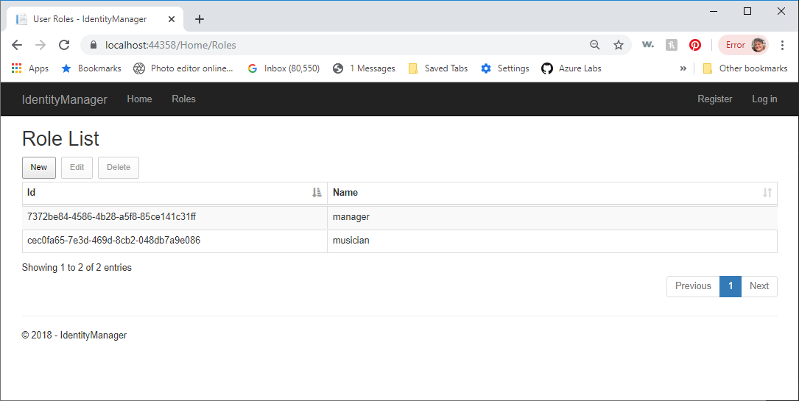

Blazor Workshop Part 2
This section will guide you through the process of creating an application to help band managers book gigs and manage musicians using AspNet Core 3.0, Server-Side Blazor, AspNet Identity authentication, Entity Framework Core 3, Javascript Interop, and SignalR.
Initial Setup
Download Visual Studio Community https://visualstudio.microsoft.com/vs/
Install with the following options:
- ASP.NET and web development
- Data Storage and processing
- .NET Core cross-platform development
Go to Individual components and search for localdb. Check off the option SQL Server Express 2016 LocalDB
First Step - Generate the BandBooker Database
Open the BandBookerDataTest project in a new instance of Visual Studio. This is a console app attached to a class library called BandBookerData, which will serve as our data layer using Entity Framework Core 3.
Take a look at the structure in the Solution Explorer:
If you like you can peruse the various models. There are five main models (Instrument, Musician, Band, Venue, and Booking). The others are there to represent many-to-many relationships between these models.
The BandBookerContext.cs file contains the DbContext, and uses the Fluent API to describe the relationships. It also requires the connection string to the database. So, let's make a new database.
From the View menu, select Sql Server Object Explorer.
Add a new database called BandBooker by right-clicking on Databases (under localdb) and selecting Add New Database.
Next, we need the connection string to our BandBooker database. You can get that by copying the Connection string property from the database itself. Select the database in the Sql Server Object Explorer and copy the property value from the Properties Window.
Copy the connection string and paste it into the data_appsettings.json file:
Now we can generate the database.
Open the Package Manager Console by selecting View / Other Windows / Package Manager Console.
Make sure BandBookerData is the selected project:
Enter the following command:
add-migration initial-create
You should see something like this:
Over in the Solution Explorer, you will see a Migrations folder
What we have done is to create all the code necessary to generate the database from the models and DbContext. All we have to do now is apply this migration to the database with this command:
xxxxxxxxxxupdate-database
Expand the Tables, and you should see something like this:
Now we have the database for our application.
Take a look at the DataManager.cs file. I have created static methods for you to be able to access the data in our Blazor app.
Testing the DataManager
Open up the DataManager class and look at the AddInstrument method:
xxxxxxxxxx public static Instrument AddInstrument(Instrument Instrument) { using (var context = new BandBookerContext()) { context.Instrument.Add(Instrument); context.SaveChanges(); } return Instrument; }Our methods are static so we don't have to create an instance of the DataManager in order to use it. They instantiate a DbContext, do some work, and dispose the DbContext.
It's important to know that after the context is disposed, the associated entity (in this case instrument) isn't being tracked. More on how that affects our life later on.
Now let's test it out. Open the Program.cs file in BandBookerDataTest project and add the following using statements:
xxxxxxxxxx using System;using System.Linq;using BandBookerData;using BandBookerData.Models;Now let's write some code to create an instrument and add it:
x using System;using System.Linq;using BandBookerData;using BandBookerData.Models;
namespace BandBookerDataTest{ class Program { static void Main(string[] args) { // Un-comment to start over //DataManager.DeleteAll(); // Add Guitar var guitar = (from i in DataManager.Instruments where i.Name == "Guitar" select i).FirstOrDefault(); if (guitar == null) { guitar = new Instrument() { Name = "Guitar" }; DataManager.AddInstrument(guitar); } Console.WriteLine("Instrument: {0} with InstrumentId {1}", guitar.Name, guitar.InstrumentId); } }}Press F5 to run and you should see this:
Right-click on View Data in the Instrument table in the BandBooker database and you should see something like this:
Now it's YOUR Turn!
Add another instrument with the name Keyboards to the database using the same pattern as we did for guitar. When press F5 you should see this:
Scroll down for the solution, but try it yourself, first!
Solution:
xxxxxxxxxx // Add Keyboards var keyboards = (from i in DataManager.Instruments where i.Name == "Keyboards" select i).FirstOrDefault(); if (keyboards == null) { keyboards = new Instrument() { Name = "Keyboards" }; DataManager.AddInstrument(keyboards); } Console.WriteLine("Instrument: {0} with InstrumentId {1}", keyboards.Name, keyboards.InstrumentId);Next, Take a look at the UpdateInstrument method in the DataManager:
xxxxxxxxxx public static Instrument UpdateInstrument(Instrument Instrument) { using (var context = new BandBookerContext()) { var inst = (from x in context.Instrument where x.InstrumentId == Instrument.InstrumentId select x).FirstOrDefault(); if (inst != null) { inst.Name = Instrument.Name; context.SaveChanges(); return inst; } } return Instrument; }Notice that we have to first pull the current instrument from the database, then change the properties, and then save the changes. That's because the Instrument that was passed in is not tracked. The context in which we retrieved was closed immediately after retrieving it. This gets even more complex when our model contains list properties of related models. It's more code this way, but it is much safer.
Now let's add code to update the guitar instrument. The entire Program.cs file should look like this:
xxxxxxxxxx using System;using System.Linq;using BandBookerData;using BandBookerData.Models;
namespace BandBookerDataTest{ class Program { static void Main(string[] args) { // Un-comment to start over //DataManager.DeleteAll();
// Add Guitar var guitar = (from i in DataManager.Instruments where i.Name == "Guitar" select i).FirstOrDefault(); if (guitar == null) { guitar = new Instrument() { Name = "Guitar" }; DataManager.AddInstrument(guitar); }
// Change the name from Guitar to Electric Guitar guitar.Name = "Electric Guitar"; guitar = DataManager.UpdateInstrument(guitar);
Console.WriteLine("Instrument: {0} with InstrumentId {1}", guitar.Name, guitar.InstrumentId);
// Add Keyboards var keyboards = (from i in DataManager.Instruments where i.Name == "Keyboards" select i).FirstOrDefault(); if (keyboards == null) { keyboards = new Instrument() { Name = "Keyboards" }; DataManager.AddInstrument(keyboards); } Console.WriteLine("Instrument: {0} with InstrumentId {1}", keyboards.Name, keyboards.InstrumentId);
} }}Upon pressing F5 you should see this:
Before we go any further, we need to change the name of the guitar instrument back to Guitar or our code won't work.
View Data on the Instrument table and change the first instrument name back to Guitar:

Now, comment out the code to update the instrument:
xxxxxxxxxx //// Change the name from Guitar to Electric Guitar //guitar.Name = "Electric Guitar"; //guitar = DataManager.UpdateInstrument(guitar);Next, Let's check out the DeleteInstrument method in the DataManager:
xxxxxxxxxx public static string DeleteInstrument(Instrument Instrument, bool RemoveAllAssociations = false) { try { using (var context = new BandBookerContext()) { var musicianInstruments = from x in context.MusicianInstrument where x.InstrumentId == Instrument.InstrumentId select x;
var bookingMusicianInstruments = from x in context.BookingMusicianInstrument where x.InstrumentId == Instrument.InstrumentId select x;
if (RemoveAllAssociations) { foreach (var child in musicianInstruments) { context.MusicianInstrument.Remove(child); }
foreach (var bmi in bookingMusicianInstruments) { context.BookingMusicianInstrument.Remove(bmi); } context.SaveChanges(); } else { if (musicianInstruments.Count() > 0) { return "The instrument can not be deleted because " + "one or more musicians plays it."; } else if (bookingMusicianInstruments.Count() > 0) { return "The instrument can not be deleted because " + "it is required at one or more gigs."; } } var inst = (from x in context.Instrument where x.InstrumentId == Instrument.InstrumentId select x).FirstOrDefault(); if (inst != null) { context.Instrument.Remove(inst); context.SaveChanges(); } } } catch (Exception ex) { return ex.Message; } return ""; }And so it begins. Dependencies. Business Rules. We can't just allow an instrument to be deleted. What if that instrument is played by one or more musicians? What if those musicians have been hired for gigs to play that instrument? We have an option to remove all of these associations. The default is false. If we try to delete an instrument that has associated musicians and/or bookings, we will not be allowed to delete it by default.
But for now, we certainly can delete these instruments.
Let's add this code to the end of our Main() in the test app:
xxxxxxxxxx // Delete the guitar DataManager.DeleteInstrument(guitar); Console.WriteLine("Instrument: {0} deleted", guitar.Name);Run the app and you should see this:
View Data on the database to make sure it worked.
Comment out the code to delete the guitar and run it again.
xxxxxxxxxx //// Delete the guitar //DataManager.DeleteInstrument(guitar); //Console.WriteLine("Instrument: {0} deleted", guitar.Name);Now the guitar gets added back in, but it has a new InstrumentId (3):
That's about all the time I want to spend in the DataManager, but here is the finished Program.cs file that populates the database with a record in each table:
xxxxxxxxxx using System;using System.Linq;using BandBookerData;using BandBookerData.Models;
namespace BandBookerDataTest{ class Program { static void Main(string[] args) { // Un-comment to start over //DataManager.DeleteAll();
// Add Guitar var guitar = (from i in DataManager.Instruments where i.Name == "Guitar" select i).FirstOrDefault(); if (guitar == null) { guitar = new Instrument() { Name = "Guitar" }; DataManager.AddInstrument(guitar); }
// Change the name from Guitar to Electric Guitar //guitar.Name = "Electric Guitar"; //guitar = DataManager.UpdateInstrument(guitar);
Console.WriteLine("Instrument: {0} with InstrumentId {1}", guitar.Name, guitar.InstrumentId);
// Add Keyboards var keyboards = (from i in DataManager.Instruments where i.Name == "Keyboards" select i).FirstOrDefault(); if (keyboards == null) { keyboards = new Instrument() { Name = "Keyboards" }; DataManager.AddInstrument(keyboards); } Console.WriteLine("Instrument: {0} with InstrumentId {1}", keyboards.Name, keyboards.InstrumentId);
// Delete the guitar //DataManager.DeleteInstrument(guitar); //Console.WriteLine("Instrument: {0} deleted", guitar.Name);
// Musician var musician = (from m in DataManager.Musicians where m.Name == "Harry Chap" select m).FirstOrDefault(); if (musician == null) { musician = new Musician() { Name = "Harry Chap", Bio = "Harry Chap plays a mean guitar and sings his butt off", Email = "harry@harrychap.com", MobilePhone = "888-555-1212", PhotoUrl = "", }; musician = DataManager.AddMusician(musician, guitar); }
//string message = DataManager.DeleteMusician(musician, true); //if (message != "") // Console.WriteLine(message); //else // Console.WriteLine("Musician {0} deleted", musician.Name); //return;
//musician.Name = "Hairy Chap"; //musician = DataManager.UpdateMusician(musician);
Console.WriteLine("Musician: {0}", musician.Name); foreach (var mi in musician.MusicianInstrument) { Console.WriteLine(" plays {0}", mi.Instrument.Name); }
// Band var band = (from x in DataManager.Bands where x.Name == "The Harry Chap Band" select x).FirstOrDefault(); if (band == null) { band = new Band() { Name = "The Harry Chap Band", Description = "These guys can really jam!" }; band = DataManager.AddBand(band, musician); } Console.WriteLine("Band: {0}", band.Name);
// Venue var venue = (from x in DataManager.Venues where x.Name == "The Spotted Horse" select x).FirstOrDefault(); if (venue == null) { venue = new Venue() { Name = "The Spotted Horse" }; venue = DataManager.AddVenue(venue); } Console.WriteLine("Venue: {0}", venue.Name);
// Booking var booking = (from x in DataManager.Bookings where x.BandId == band.BandId select x).FirstOrDefault(); if (booking == null) { booking = new Booking() { Name = "Harry Chap Band at the Spotted Horse", BandId = band.BandId, VenueId = venue.VenueId, DateAndTime = DateTime.Now.AddDays(30), PayOffering = "50 bucks" }; booking = DataManager.AddBooking(booking); } Console.WriteLine("Booking: {0} at {1} on {2}", band.Name, venue.Name, booking.DateAndTime.ToLongDateString()); } }}Here is the output if you run it:
Building the Blazor App
Create a new Blazor App called BandBooker
Change Authentication to use Individual User Accounts

Before we start, we need to turn on detailed error reporting. If you don't do this and you get an unhandled exception, the error message in the debugger console will not be of any help.
Open the Program.cs file and make the following modification:
xxxxxxxxxx public static IHostBuilder CreateHostBuilder(string[] args) => Host.CreateDefaultBuilder(args) .ConfigureWebHostDefaults(webBuilder => { webBuilder.UseStartup<Startup>() .UseSetting(WebHostDefaults.DetailedErrorsKey, "true"); });Specifically, add the option .UseSetting(WebHostDefaults.DetailedErrorsKey, "true"); to the code block above.
Now run the application
Click on the Register link
Use the following credentials:
Email: harry@harrychap.com
Password: P@ssword1
When you click the Register you will see this screen:

Click Apply Migrations
Once applied, you will be asked to refresh the screen. Go ahead. Now you should be logged in
Close the app
Go to Startup.cs
Note the Identity Framework DbContext is set to use SQL Server
Note the DefaultConnection in appsettings.json. Copy the connection string to the clipboard.
From the View menu, select SQL Server Object Explorer
Expand localdb and locate your database from the name specified in your DefaultConnection
If you've never seen an AspNet Identity database before, check it out. You'll find the user in dbo.AspNetUsers. Right-click and select View Data.
Identity Manager
There is no easy way to manage users and roles with Visual Studio in a .NET Core app. So, we're going to use an open source Identity Manager project. All we have to do is give it the connection string to our Identity database and it works like a champ.
Download, unblock, and extract the IdentityManager Zip file from Github at https://github.com/mguinness/IdentityManager/archive/master.zip into your working directory. To avoid an unnecessary subfolder, remove the IdentityManager-master when extracting the zip file.
Load it up in Visual Studio by opening IdentityManager.sln
Change the DefaultConnection connection string in appsettings.json to the BandBooker connection string (not BandBookerData).
Click on the IdentityManager project file and replace the two middle ItemGroups with the following:
xxxxxxxxxx <ItemGroup> <PackageReference Include="Microsoft.AspNetCore.All" Version="2.0.9" /> <PackageReference Include="Microsoft.EntityFrameworkCore.Design" Version="2.2.6" /> <PackageReference Include="Microsoft.EntityFrameworkCore.Tools" Version="2.0.3" PrivateAssets="All" /> <PackageReference Include="Microsoft.VisualStudio.Web.CodeGeneration.Design" Version="2.0.0" PrivateAssets="All" /> </ItemGroup>
<ItemGroup> <DotNetCliToolReference Include="Microsoft.EntityFrameworkCore.Tools.DotNet" Version="2.0.3" /> <DotNetCliToolReference Include="Microsoft.Extensions.SecretManager.Tools" Version="2.0.0" /> <DotNetCliToolReference Include="Microsoft.VisualStudio.Web.CodeGeneration.Tools" Version="2.0.0" /> </ItemGroup>Open the startup.cs file and specify we want to use SqlServer instead of SqlLite. Change this:
xxxxxxxxxx services.AddDbContext<ApplicationDbContext>(options => options.UseSqlite(Configuration.GetConnectionString("DefaultConnection")));to this:
xxxxxxxxxx services.AddDbContext<ApplicationDbContext>(options => options.UseSqlServer(Configuration.GetConnectionString("DefaultConnection")));Press F5 to run. You should see something like this:
Now we have a way to manage our users and the roles they belong to. You can keep IdentityManager running for the duration.
Add the BandBookerData project to the BandBooker solution and add a project reference to it from the BandBooker project.
UI for Managing Instruments
In this section we will build the UI for adding, editing, and deleting instruments.
Showing a list of Instruments
We will start by showing a list of instruments.
Open Index.razor from the Pages folder in Visual Studio and replace the contents with this:
xxxxxxxxxx @page "/"@using BandBookerData;@using BandBookerData.Models;@using Microsoft.AspNetCore.Components;
<h2>Instruments</h2><select size="10" style="width:100%;" disabled="@DisableInstrumentList"> @foreach (var instrument in AllInstruments) { @if (SelectedInstrument != null && instrument.InstrumentId == SelectedInstrument.InstrumentId) { <option selected value="@instrument.InstrumentId.ToString()"> @instrument.Name </option> } else { <option value="@instrument.InstrumentId.ToString()">@instrument.Name</option> } }</select><br />
@code {
bool DisableInstrumentList = false; Instrument SelectedInstrument; List<Instrument> AllInstruments = new List<Instrument>();
protected override void OnInitialized() { AllInstruments = DataManager.Instruments; }}Hit F5 and you should see something like this:
Stop the app. One of the drawbacks of the current version of Server-Side Blazor is that you can't edit the code while it's running.
Now, let's wire up an event in Index.razor that happens when an instrument is selected. Add the following method to the @code block:
xxxxxxxxxx void InstrumentSelected(ChangeEventArgs args) { string instrumentId = args.Value.ToString(); }Now modify the select element with an @onchanged handler:
xxxxxxxxxx <select @onchange="InstrumentSelected" size="10" style="width:100%;" disabled="@DisableInstrumentList"> @foreach (var instrument in AllInstruments) { @if (SelectedInstrument != null && instrument.InstrumentId == SelectedInstrument.InstrumentId) { <option selected value="@instrument.InstrumentId.ToString()"> @instrument.Name </option> } else { <option value="@instrument.InstrumentId.ToString()">@instrument.Name</option> } }</select>Here's what the entire file should look like:
xxxxxxxxxx@page "/"@using BandBookerData;@using BandBookerData.Models;@using Microsoft.AspNetCore.Components;<h2>Instruments</h2><select @onchange="InstrumentSelected"size="10" style="width:100%;"disabled="@DisableInstrumentList">@foreach (var instrument in AllInstruments){@if (SelectedInstrument != null&& instrument.InstrumentId == SelectedInstrument.InstrumentId){<option selected value="@instrument.InstrumentId.ToString()">@instrument.Name</option>}else{<option value="@instrument.InstrumentId.ToString()">@instrument.Name</option>}}</select><br />@code {bool DisableInstrumentList = false;Instrument SelectedInstrument;List<Instrument> AllInstruments = new List<Instrument>();void InstrumentSelected(ChangeEventArgs args){string instrumentId = args.Value.ToString();}protected override void OnInitialized(){AllInstruments = DataManager.Instruments;}}
Put a breakpoint on the line where we are reading args.Value.ToString(), and press F5
Click on one of the instruments and the code stops at the break point. Hover over Value and you'll see the InstrumentId of the selected instrument.
Let's retrieve the actual Instrument object from our Data Manager. Modify the InstrumentSelected method like so:
xxxxxxxxxx void InstrumentSelected(ChangeEventArgs args) { string instrumentId = args.Value.ToString(); SelectedInstrument = (from x in AllInstruments where x.InstrumentId.ToString() == instrumentId.ToString() select x).First(); string instName = SelectedInstrument.Name; }Put a breakpoint on line 45, where we set the instName variable and press F5.
Select an instrument, and hover over the Name property when the code breaks.
Add CRUD Buttons
Let's add a few more things to our Instrument list, such as the ability to add, edit, and delete instruments. We're going to start slowly, by dealing with buttons and enabling/disabling controls based on what has been selected.
Replace index.razor with the following:
xxxxxxxxxx "/" BandBookerData; BandBookerData.Models; Microsoft.AspNetCore.Components;
<h2>Instruments</h2><select ="InstrumentSelected" size="10" style="width:100%;" disabled="@DisableInstrumentList"> (var instrument in AllInstruments) { (SelectedInstrument != null && instrument.InstrumentId == SelectedInstrument.InstrumentId) { <option selected value="@instrument.InstrumentId.ToString()"> .Name </option> } else { <option value="@instrument.InstrumentId.ToString()">.Name</option> } }</select><br /> <button disabled="@DisableInstrumentList" ="NewInstrumentButtonClick">New</button><span> </span>
<button disabled="@DisableInstrumentEditButton" ="EditInstrumentButtonClick">Edit</button><span> </span>
<button disabled="@DisableInstrumentEditButton" ="DeleteInstrumentButtonClick">Delete</button><span> </span>
<br /><span style="color:red;"></span>
{
bool DisableInstrumentList = false; bool DisableInstrumentEditButton = true; string InstrumentErrorMessage = ""; Instrument SelectedInstrument; List<Instrument> AllInstruments = new List<Instrument>();
protected override void OnInitialized() { AllInstruments = DataManager.Instruments; } void InstrumentSelected(ChangeEventArgs args) { InstrumentErrorMessage = ""; string instrumentId = args.Value.ToString(); SelectedInstrument = (from x in DataManager.Instruments where x.InstrumentId.ToString() == instrumentId.ToString() select x).First(); if (SelectedInstrument != null) DisableInstrumentEditButton = false; else DisableInstrumentEditButton = true; }
void NewInstrumentButtonClick() {
}
void EditInstrumentButtonClick() {
}
void DeleteInstrumentButtonClick() {
}}When an instrument is selected, we persist that to a SelectedInstrument variable. Because we're referencing the Instrument class directly, we've added a using statement for BandBookerData.Models.
We also have a boolean for disabling the Edit and Delete buttons (DisableInstrumentEditButton), set to true by default, and only set to false when SelectedInstrument is null.
We have wired up three buttons to event handlers.
We have also defined a DisableInstrumentList boolean to disable the select which we will set to true when Adding or Editing, so the user can't select another instrument during that process.
Finally, we have defined an InstrumentErrorMessage string that we can use to show the user validation or error messages.
Press F5 and verify the fact that the Edit and Delete buttons do in fact get enabled when an instrument is selected.
Delete Instrument
The code to delete an instrument is easy. Replace the DeleteInstrumentButtonClick() method with this code:
xxxxxxxxxx void DeleteInstrumentButtonClick() { if (SelectedInstrument != null) { InstrumentErrorMessage = DataManager.DeleteInstrument(SelectedInstrument); if (InstrumentErrorMessage == "") { AllInstruments.Remove((from x in AllInstruments where x.InstrumentId == SelectedInstrument.InstrumentId select x).First()); if (AllInstruments.Count > 0) { SelectedInstrument = AllInstruments.First(); } } } }Press F5, select Guitar and press the Delete button. You should see this:
Remember, the DataManager does all the work and has all the business rules in it, so the UI layer need only report the results.
Building an InstrumentEditor Component
This component is going to be simple. It will let us add or edit an instrument. The only thing we have to specify is the name, so this should be easy.
Right-click on the Pages folder in Solution Explorer and press Ctrl-Shift-A to add a new item. Search for Razor Component and add a new one called InstrumentEditor.razor
Replace the entire contents of the file with this:
xxxxxxxxxx Microsoft.AspNetCore.Components.Web BandBookerData.Models
( == true){ <div style="background-color:lightgray;"> <div style="padding:1vw;"> <EditForm Model="@Instrument" OnValidSubmit="@SubmitButtonPressed"> <DataAnnotationsValidator /> <ValidationSummary /> Name: <InstantInputText -Value="@Instrument.Name" type="text" style="width:100%;" /> <br /><br /> <button type="submit"></button> <span> </span> <button type="button" ="CancelButtonPressed">Cancel</button> </EditForm> </div> </div>}
{
[Parameter] public EventCallback<string> CancelPressed { get; set; } [Parameter] public EventCallback<Instrument> InstrumentAdded { get; set; } [Parameter] public EventCallback<string> InstrumentUpdated { get; set; } [Parameter] public Instrument Instrument { get; set; } bool ShowInstrumentPanel = false; string SubmitButtonText = ""; bool Adding = false; public void Hide() { ShowInstrumentPanel = false; } public void NewInstrument() { Adding = true; SubmitButtonText = "Add"; ShowInstrumentPanel = true; }
public void EditInstrument() { Adding = false; SubmitButtonText = "Update"; ShowInstrumentPanel = true; } async Task SubmitButtonPressed() { if (Adding) { await InstrumentAdded.InvokeAsync(Instrument); } else { await InstrumentUpdated.InvokeAsync(""); } } async Task CancelButtonPressed() { ShowInstrumentPanel = false; await CancelPressed.InvokeAsync(""); }}InstantInputText
If you recall from the first part of our workshop, the validation controls don't update on every keypress. In order to do that we need to make a new component that subclasses
Right-click on the Pages folder and add a new Razor Component named InstantInputText.razor.
Replace the contents with these two lines:
xxxxxxxxxx @inherits Microsoft.AspNetCore.Components.Forms.InputText<input @attributes="@AdditionalAttributes" class="@CssClass" @bind="@CurrentValueAsString" @bind:event="oninput" />Now your code should compile, after fixing a few space issues from the copy/paste operation. We will use InstantInputText wherever we would normally use an InputText element.
Now, let's take a look at the code above.
The ShowInstrumentPanel boolean determines whether or not this component's UI is displayed.
What's cool about this component is the three parameters which define event handlers for InstrumentAdded, InstrumentUpdated, and CancelPressed.
We have a local Instrument variable that gets set by our code.
Check out the two public methods: NewInstrument() and EditInstrument().
NewInstrument() sets the Instrument to a new instance of Instrument, and also changes the text that get's shown in the Submit button to "Add". It also sets a boolean Adding to true. That's so we know which event to raise when the Submit button is pressed.
EditInstrument() accepts an Instrument argument, and sets the local Instrument variable to it. It also sets the Adding and SubmitButtonText variables.
When the users clicks the Submit button, the SubmitButtonPressed method is called, which raises either the InstrumentAdded or InstrumenUpdated event, which gets handled in the host (Index.razor).
The Hide() method simply hides the component. We'll need to call that in the host.
Consuming the InstrumentEditor Component
Go back to Index.razor and add the following in between the html and the @code block:
xxxxxxxxxx <InstrumentEditor @ref="instrumentEditor" Instrument ="SelectedInstrument" CancelPressed="InstrumentCancelled" InstrumentAdded="InstrumentAdded" InstrumentUpdated="InstrumentUpdated"></InstrumentEditor><br /><br />Notice @ref="instrumentEditor". That is how we can access the component directly with a local variable, in this case instrumentEditor.
Now we need to add a variable and three event handlers to our @code block:
xxxxxxxxxx InstrumentEditor instrumentEditor;
void InstrumentCancelled(string message) { if (SelectedInstrument != null) { SelectedInstrument = (from x in DataManager.Instruments where x.InstrumentId == SelectedInstrument.InstrumentId select x).FirstOrDefault(); } InstrumentErrorMessage = message; DisableInstrumentList = false; DisableInstrumentEditButton = (SelectedInstrument == null); }
void InstrumentAdded(Instrument instrument) { DataManager.AddInstrument(instrument); DisableInstrumentList = false; DisableInstrumentEditButton = (SelectedInstrument == null); instrumentEditor.Hide(); }
void InstrumentUpdated(string message) { SelectedInstrument = DataManager.UpdateInstrument(SelectedInstrument);
AllInstruments[AllInstruments.FindIndex( x => x.InstrumentId == SelectedInstrument.InstrumentId)] = SelectedInstrument;
DisableInstrumentList = false; DisableInstrumentEditButton = false; instrumentEditor.Hide(); }Before we can run, we need to fill out the button click handlers for New and Edit:
xxxxxxxxxx void NewInstrumentButtonClick() { InstrumentErrorMessage = ""; DisableInstrumentList = true; DisableInstrumentEditButton = true; SelectedInstrument = new Instrument(); instrumentEditor.NewInstrument(); }
void EditInstrumentButtonClick() { DisableInstrumentList = true; DisableInstrumentEditButton = true; instrumentEditor.EditInstrument(); }Press F5 and try editing an instrument, adding an instrument, and then deleting that instrument.
What is important to note here is that the InstrumentEditor component doesn't know anything about the Data Manager or the database. Its job is to simply edit the Instrument entity and report back to the host page (Index.razor) where the Data Manager is called to do the heavy lifting.
Also note that the InstrumentCancelled event handler accepts a string argument that is ignored. That's because every EventCallback has to have one argument.
Just take a look at the component architecture here. How easy is this? As a .NET developer, I've been through the ringer with Events, custom EventArgs subclasses, and the like. Blazor just takes all the ceremony away and makes it easy to define and handle events.
While we're on the subject of making it easy, are you impressed yet with how seamless the experience has been, even compared to Web Forms? Are you ready for more! Let's keep going!
Stupid JavaScript Tricks: Set Focus
Wouldn't it be cool if we could automatically set focus to the name InstantInputText when we show the InstrumentEditor component?
This one took me a long time to figure out. Assuming there is some kind of JavaScript function we can call from our code to set focus, we could call it from our NewInstrument() and EditInstrument() public methods. The problem is that until those methods complete, the InstantInputText element doesn't exist. So, I had to do a little timeout voodoo.
Open the _Host.cshtml file under the Pages folder and change it to this:
xxxxxxxxxx @page "/"@namespace BandBooker.Pages@addTagHelper *, Microsoft.AspNetCore.Mvc.TagHelpers
<!DOCTYPE html><html lang="en"><head> <meta charset="utf-8" /> <meta name="viewport" content="width=device-width, initial-scale=1.0" /> <title>Band Booker</title> <base href="~/" /> <link rel="stylesheet" href="css/bootstrap/bootstrap.min.css" /> <link href="css/site.css" rel="stylesheet" /></head><body> <app> @(await Html.RenderComponentAsync<App>(RenderMode.ServerPrerendered)) </app>
<script src="_framework/blazor.server.js"></script> <script> window.SetFocus = (Id) => { setTimeout(internalFocus, 10, Id); }; function internalFocus(Id) { var element = document.getElementById(Id); if (element == null) { setTimeout(internalFocus, 10, Id); return; } element.focus(); element.select(); } </script></body></html>We will call the SetFocus() function using JavaScript Interop. It will wait 10 ms to call the internalFocus()function, which tries to get a reference to the element. If it can't, it simply calls itself again after another 10ms timeout. Once it has a reference, it sets the .focus() and .select() functions on that element. The danger here is that if you don't pass a valid Id, you will set this thing spinning out of control.
Now, we need a few mods to our InstrumentEditor.razor. Add this to the top of the page:
xxxxxxxxxx@inject IJSRuntime js;
Now, we have to give our InstantInputText element an Id:
xxxxxxxxxx Name: <InstantInputText id="instrument.name" @bind-Value="@Instrument.Name" type="text" style="width:100%;" />Now, change the NewInstrument() and EditInstrument() methods to be async, and add the call to set focus:
xxxxxxxxxx public async Task NewInstrument() { Adding = true; SubmitButtonText = "Add"; ShowInstrumentPanel = true; await js.InvokeVoidAsync("SetFocus", "instrument.name"); }
public async Task EditInstrument() { Adding = false; SubmitButtonText = "Update"; ShowInstrumentPanel = true; await js.InvokeVoidAsync("SetFocus", "instrument.name"); }Finally, we have to change the button click handlers in Index.razor to be async as well:
xxxxxxxxxx async Task NewInstrumentButtonClick() { InstrumentErrorMessage = ""; DisableInstrumentList = true; DisableInstrumentEditButton = true; SelectedInstrument = new Instrument(); await instrumentEditor.NewInstrument(); }
async Task EditInstrumentButtonClick() { DisableInstrumentList = true; DisableInstrumentEditButton = true; await instrumentEditor.EditInstrument(); }Press F5. Test out the new focus feature by adding and/or editing an instrument.
Before we get started with musicians, wrap all of the Instrument code in a region called #Instruments
Here is what our Index.razor file looks like at the end of the first section:
xxxxxxxxxx "/" BandBookerData; BandBookerData.Models; Microsoft.AspNetCore.Components;
<h2>Instruments</h2><select ="InstrumentSelected" size="10" style="width:100%;" disabled="@DisableInstrumentList"> (var instrument in AllInstruments) { (SelectedInstrument != null && instrument.InstrumentId == SelectedInstrument.InstrumentId) { <option selected value="@instrument.InstrumentId.ToString()"> .Name </option> } else { <option value="@instrument.InstrumentId.ToString()">.Name</option> } }</select><br />
<button disabled="@DisableInstrumentList" ="NewInstrumentButtonClick">New</button><span> </span>
<button disabled="@DisableInstrumentEditButton" ="EditInstrumentButtonClick">Edit</button><span> </span>
<button disabled="@DisableInstrumentEditButton" ="DeleteInstrumentButtonClick">Delete</button><span> </span>
<br /><span style="color:red;"></span>
<InstrumentEditor ="instrumentEditor" Instrument ="SelectedInstrument" CancelPressed="InstrumentCancelled" InstrumentAdded="InstrumentAdded" InstrumentUpdated="InstrumentUpdated"></InstrumentEditor><br /><br />
{
#region Instruments
bool DisableInstrumentList = false; bool DisableInstrumentEditButton = true; string InstrumentErrorMessage = ""; Instrument SelectedInstrument; List<Instrument> AllInstruments = new List<Instrument>(); InstrumentEditor instrumentEditor;
void InstrumentCancelled(string message) { if (SelectedInstrument != null) { SelectedInstrument = (from x in DataManager.Instruments where x.InstrumentId == SelectedInstrument.InstrumentId select x).FirstOrDefault(); } InstrumentErrorMessage = message; DisableInstrumentList = false; DisableInstrumentEditButton = (SelectedInstrument == null); }
void InstrumentAdded(Instrument instrument) { DataManager.AddInstrument(instrument); DisableInstrumentList = false; DisableInstrumentEditButton = (SelectedInstrument == null); instrumentEditor.Hide(); AllInstruments.Add(instrument); }
void InstrumentUpdated(string message) { SelectedInstrument = DataManager.UpdateInstrument(SelectedInstrument); AllInstruments[AllInstruments.FindIndex( x => x.InstrumentId == SelectedInstrument.InstrumentId)] = SelectedInstrument;
DisableInstrumentList = false; DisableInstrumentEditButton = false; instrumentEditor.Hide(); }
protected override void OnInitialized() { AllInstruments = DataManager.Instruments; }
void InstrumentSelected(ChangeEventArgs args) { InstrumentErrorMessage = ""; string instrumentId = args.Value.ToString(); SelectedInstrument = (from x in DataManager.Instruments where x.InstrumentId.ToString() == instrumentId.ToString() select x).First(); if (SelectedInstrument != null) DisableInstrumentEditButton = false; else DisableInstrumentEditButton = true; }
async Task NewInstrumentButtonClick() { InstrumentErrorMessage = ""; DisableInstrumentList = true; DisableInstrumentEditButton = true; SelectedInstrument = new Instrument(); await instrumentEditor.NewInstrument(); }
async Task EditInstrumentButtonClick() { DisableInstrumentList = true; DisableInstrumentEditButton = true; await instrumentEditor.EditInstrument(); }
void DeleteInstrumentButtonClick() { if (SelectedInstrument != null) { InstrumentErrorMessage = DataManager.DeleteInstrument(SelectedInstrument); if (InstrumentErrorMessage == "") { AllInstruments.Remove((from x in AllInstruments where x.InstrumentId == SelectedInstrument.InstrumentId select x).First()); if (AllInstruments.Count > 0) { SelectedInstrument = AllInstruments.First(); } } } } #endregion}UI for Managing Musicians
In this section we will build the UI for adding, editing, and deleting musicians.
First, create the MusicianEditor component
Add a new Razor Component called MusicianEditor.razor and replace all the code with this:
xxxxxxxxxx Microsoft.AspNetCore.Components.Web Data BandBookerData.Models System.IO; Blazor.FileReader; IFileReaderService fileReaderService; IJSRuntime js;
( != null && == true){ <div style="background-color:lightgray;"> <div style="padding:1vw;"> <EditForm Model="@Musician" OnValidSubmit="@SubmitButtonPressed"> <DataAnnotationsValidator /> <ValidationSummary /> Name: <InstantInputText -Value="@Musician.Name" id="musician.name" type="text" style="width:100%;" /> <br /><br /> Email: <InstantInputText -Value="@Musician.Email" type="text" style="width:100%;" /> <br /><br /> Mobile Phone: <InstantInputText -Value="@Musician.MobilePhone" type="text" style="width:100%;" /> <br /><br /> Bio: <textarea id="BioControl" ="@Musician.Bio" rows="4" style="width: 100%; overflow: hidden; overflow-wrap: break-word; overflow-y: scroll; " /> <br /> <table style="width:100%"> <tr> <td style="width:45%;" valign="top"> All Instruments:<br /> </td> <td style="width:10%;" valign="top"> <span> </span> </td> <td style="width:45%;" valign="top"> (Musician.Name != null && Musician.Name != "") { <span>.Name's Instruments:</span> } else { <span>Musician's Instruments:</span> } <br /> </td> </tr> <tr> <td style="width:45%;" valign="top"> <select ="InstrumentSelectedFromMaster" size="10" style="width:100%;"> (var instrument in AllInstruments) { ((from x in Musician.MusicianInstrument where x.Instrument.Name == instrument.Name select x).FirstOrDefault() == null) { <option value="@instrument.InstrumentId.ToString()"> .Name </option> } } </select> </td> <td style="width:10%;" valign="top"> <button ="AddSelectedInstrument" type="button" disabled="@AddSelectedInstrumentButtonDisabled" style="width:100%;"> > </button><br /> <button ="@AddAllInstruments" type="button" style="width:100%;"> >> </button><br /> <button ="@RemoveSelectedInstrument" type="button" disabled="@RemoveSelectedInstrumentButtonDisabled" style="width:100%;"> < </button><br /> <button ="@RemoveAllInstruments" type="button" style="width:100%;"> << </button><br /> </td> <td style="width:45%;" valign="top"> <select ="InstrumentSelectedFromMusician" size="10" style="width:100%;"> (var mi in Musician.MusicianInstrument) { <option value="@mi.Instrument.InstrumentId.ToString()"> .Instrument.Name </option> } </select>
</td> </tr> </table> <br /> Photo: <br /> <input type="file" =inputTypeFileElement /> <button type="button" =ReadFile>Upload</button> <br /> (.PhotoUrl != "") { <img src="@Musician.PhotoUrl" /> } <br /><br /> <button type="submit"></button> <span> </span> <button type="button" ="CancelButtonPressed">Cancel</button> </EditForm> </div> </div>}
{
private List<Instrument> AllInstruments { get; set; }
[Parameter] public EventCallback<string> CancelPressed { get; set; }
[Parameter] public EventCallback<Musician> MusicianAdded { get; set; }
[Parameter] public EventCallback<Musician> MusicianUpdated { get; set; }
Musician Musician { get; set; } = new Musician(); bool ShowMusicianPanel = false; bool AddSelectedInstrumentButtonDisabled = true; bool RemoveSelectedInstrumentButtonDisabled = true; Instrument SelectedInstrument; ElementReference inputTypeFileElement; bool Adding = false; string SubmitButtonText = "";
public void Hide() { ShowMusicianPanel = false; }
public async Task ReadFile() { string filename = "wwwroot/images/";
foreach (var file in await fileReaderService.CreateReference(inputTypeFileElement).EnumerateFilesAsync()) { // Read into buffer and act (uses less memory) using (Stream stream = await file.OpenReadAsync()) { var buffer = new byte[stream.Length]; await stream.ReadAsync(buffer, 0, buffer.Length);
var info = await file.ReadFileInfoAsync(); var extension = Path.GetExtension(filename + info.Name); var name = $@"{Guid.NewGuid()}" + extension; filename += name;
using (Stream outfile = System.IO.File.OpenWrite(filename)) { outfile.Write(buffer, 0, buffer.Length); } ImageResizer.ResizeAndSaveImage(filename, 200); Musician.PhotoUrl = "/images/" + name; } } }
void AddAllInstruments() { foreach (Instrument instrument in AllInstruments) { if ((from x in Musician.MusicianInstrument where x.Instrument.Name == instrument.Name select x).FirstOrDefault() == null) { var mi = new MusicianInstrument() { Musician = this.Musician, Instrument = instrument }; Musician.MusicianInstrument.Add(mi); } } }
void RemoveAllInstruments() { foreach (MusicianInstrument mi in Musician.MusicianInstrument.ToArray()) { Musician.MusicianInstrument.Remove(mi); } }
void AddSelectedInstrument() { var mi = new MusicianInstrument() { Musician = this.Musician, Instrument = SelectedInstrument }; Musician.MusicianInstrument.Add(mi); AddSelectedInstrumentButtonDisabled = true; }
void RemoveSelectedInstrument() { var match = (from x in Musician.MusicianInstrument where x.Instrument.InstrumentId == SelectedInstrument.InstrumentId select x).FirstOrDefault(); if (match != null) { Musician.MusicianInstrument.Remove(match); RemoveSelectedInstrumentButtonDisabled = true; } }
void InstrumentSelectedFromMusician( Microsoft.AspNetCore.Components.ChangeEventArgs args) { SelectedInstrument = (from x in AllInstruments where x.InstrumentId == Convert.ToInt32(args.Value) select x).FirstOrDefault(); RemoveSelectedInstrumentButtonDisabled = false; AddSelectedInstrumentButtonDisabled = true; }
void InstrumentSelectedFromMaster( Microsoft.AspNetCore.Components.ChangeEventArgs args) { SelectedInstrument = (from x in AllInstruments where x.InstrumentId == Convert.ToInt32(args.Value) select x).FirstOrDefault(); AddSelectedInstrumentButtonDisabled = false; RemoveSelectedInstrumentButtonDisabled = true; }
public async Task NewMusician(List<Instrument> Instruments) { this.Musician = new Musician(); AllInstruments = Instruments; Adding = true; SubmitButtonText = "Add"; ShowMusicianPanel = true; await js.InvokeVoidAsync("SetFocus", "musician.name"); }
public async Task EditMusician(List<Instrument> Instruments, Musician Musician) { AllInstruments = Instruments; Adding = false; SubmitButtonText = "Update"; this.Musician = Musician; ShowMusicianPanel = true; await js.InvokeVoidAsync("SetFocus", "musician.name"); }
async Task SubmitButtonPressed() { if (Adding) { await MusicianAdded.InvokeAsync(this.Musician); } else { await MusicianUpdated.InvokeAsync(this.Musician); } }
async Task CancelButtonPressed() { ShowMusicianPanel = false; await CancelPressed.InvokeAsync(""); }}There's a lot to unpack here, and a few things we need to do before this code will run.
First, we need to create an Images folder off of the wwwroot. Right-click on wwwroot and select Add, then New Folder. Name it Images.
Next, we need to add a couple packages, an open source file uploader component for Blazor called Tewr, and an open source image resizer called LazZiya.
Click on the BandBooker project to expose the BandBooker.csproj file and add these to the list of packages in the first
xxxxxxxxxx<PackageReference Include="Tewr.Blazor.FileReader" Version="1.1.0.19274" /><PackageReference Include="LazZiya.ImageResize" Version="2.0.0" />
Next, open up Startup.cs and add the following line to ConfigureServices
xxxxxxxxxx services.AddFileReaderService(options => options.InitializeOnFirstCall = true);You will also need to add the following using statement:
xxxxxxxxxxusing Blazor.FileReader;
Next, in order to accept files up to 10 MB in size, we need to modify the call to AddServerSideBlazor as follows:
xxxxxxxxxx services.AddServerSideBlazor().AddHubOptions(o => { o.MaximumReceiveMessageSize = 10 * 1024 * 1024; // 10MB });Next, right click on the Data folder and add a class called ImageResizer.cs. Replace it with the following code:
xxxxxxxxxx using LazZiya.ImageResize;using System;using System.Collections.Generic;using System.Linq;using System.Threading.Tasks;using System.Drawing;
namespace BandBooker.Data{ public class ImageResizer { public static void ResizeAndSaveImage(string inputFile, int maxWidth) { var img = Image.FromFile(inputFile); var extension = System.IO.Path.GetExtension(inputFile);
string tempfile = Environment.CurrentDirectory + "\\" + DateTime.Now.Ticks.ToString() + extension;
int maxHeight = img.Height;
if (maxWidth == 0) maxWidth = img.Width;
var ratioX = (double)maxWidth / img.Width; var ratioY = (double)maxHeight / img.Height; var ratio = Math.Min(ratioX, ratioY);
var newWidth = (int)(img.Width * ratio); var newHeight = (int)(img.Height * ratio);
//resize the image to 600x400 var newImg = ImageResize.Scale(img, newWidth, newHeight);
//save new image newImg.SaveAs(tempfile);
//dispose to free up memory img.Dispose(); newImg.Dispose();
// delete original file System.IO.File.Delete(inputFile);
// rename tempfile System.IO.File.Move(tempfile, inputFile); } }}This code let's us ensure that photos uploaded won't be ridiculously large.
Now, let's go back to the Index.razor host page.
Below the html where we defined the InstrumentEditor component instance, add the following:
xxxxxxxxxx <h2>Musicians</h2><select @onchange="MusicianSelected" size="10" style="width:100%;" disabled="@DisableMusicianControls"> @foreach (var musician in DataManager.Musicians) { if (SelectedMusician != null && musician.MusicianId == SelectedMusician.MusicianId) { <option selected value="@musician.MusicianId.ToString()">@musician.Name</option> } else { <option value="@musician.MusicianId.ToString()">@musician.Name</option> } }</select><br />
<button disabled="@DisableMusicianControls" @onclick="NewMusicianButtonClick"> New</button><span> </span>
<button disabled="@DisableMusicianEditButton" @onclick="EditMusicianButtonClick"> Edit</button><span> </span>
<button disabled="@DisableMusicianEditButton" @onclick="DeleteMusicianButtonClick"> Delete</button><br />
<span style="color:red;">@MusicianErrorMessage</span><MusicianEditor @ref="musicianEditor" CancelPressed="EditMusicianCancelled" MusicianAdded="MusicianAdded" MusicianUpdated="MusicianUpdated" ></MusicianEditor><br /><br />In the @code block, below the #Instruments region, paste the following code:
xxxxxxxxxx #region Musicians string MusicianErrorMessage = ""; Musician SelectedMusician; MusicianEditor musicianEditor; bool DisableMusicianControls = false; bool DisableMusicianEditButton = true;
void EditMusicianCancelled(string message) { if (SelectedMusician != null) { SelectedMusician = (from x in DataManager.Musicians where x.MusicianId == SelectedMusician.MusicianId select x).FirstOrDefault();
} DisableMusicianControls = false; DisableMusicianEditButton = (SelectedMusician == null); }
void MusicianAdded(Musician Musician) { DataManager.AddMusician(Musician); DisableMusicianControls = false; DisableMusicianEditButton = (SelectedMusician == null); musicianEditor.Hide(); MusicianErrorMessage = ""; }
void MusicianUpdated(Musician musician) { SelectedMusician = DataManager.UpdateMusician(musician); DisableMusicianControls = false; DisableMusicianEditButton = false; musicianEditor.Hide(); }
void MusicianSelected(Microsoft.AspNetCore.Components.ChangeEventArgs args) { SelectMusicianById(Convert.ToInt32(args.Value)); }
void SelectMusicianById(int Id) { MusicianErrorMessage = "";
SelectedMusician = (from x in DataManager.Musicians where x.MusicianId.ToString() == Id.ToString() select x).FirstOrDefault();
if (SelectedMusician != null) { DisableMusicianEditButton = false; } else DisableMusicianEditButton = true; }
async Task NewMusicianButtonClick() { MusicianErrorMessage = ""; DisableMusicianControls = true; DisableMusicianEditButton = true; await musicianEditor.NewMusician(DataManager.Instruments); }
async Task EditMusicianButtonClick() { DisableMusicianControls = true; DisableMusicianEditButton = true; await musicianEditor.EditMusician(DataManager.Instruments, SelectedMusician); }
void DeleteMusicianButtonClick() { if (SelectedMusician != null) { MusicianErrorMessage = DataManager.DeleteMusician(SelectedMusician, false); if (DataManager.Musicians.Count == 1) { SelectedMusician = DataManager.Musicians.First(); } } }
#endregionPress F5. You should be able to add, edit, and delete musicians, again, after removing a few spaces from the paste operation.
Now, let's unpack this code.
The MusicianEditor has a great feature that you've probably coded a million times before. We need to let the user select the instruments that the musician plays from a list of all the instruments.
So we pass the list of all instruments as a parameter, and the component shows two list boxes. On the left is the list of all instruments. On the right is the list of instruments that the musician plays. In between the two list boxes are four buttons. 1) Add the selected instrument to the list of musician instruments. 2) Add ALL the instruments to the list of musician instruments. 3) Remove the selected instrument (on the right) from the musician's list. 4) Remove ALL the musician's instruments.
The photos are stored in the Images folder. Take a look at the ReadFile() method. Every file is stored with a new Guid as the filename (with the original extension) ensuring that a photo never gets overwritten.
Adding a WebApi Controller
This seems like a good time to implement an Api controller.
Right-click on the project and add a folder called Controllers.
Right-click on the Controllers folder and add a new item.
Select API Controller Class from the list and call it InstrumentsController
Replace the code in the controller with this:
xxxxxxxxxx using System;using System.Collections.Generic;using System.Linq;using System.Threading.Tasks;using Microsoft.AspNetCore.Http;using Microsoft.AspNetCore.Mvc;using BandBookerData;using BandBookerData.Models;
namespace BandBooker.Controllers{ [Route("api/[controller]")] [ApiController] public class InstrumentsController : ControllerBase { // GET: api/Instruments [HttpGet] public IEnumerable<Instrument> Get() { return DataManager.Instruments; }
// GET: api/Instruments/5 [HttpGet("{id}", Name = "Get")] public string Get(int id) { return "value"; }
// POST: api/Instruments [HttpPost] public void Post([FromBody] string value) { }
// PUT: api/Instruments/5 [HttpPut("{id}")] public void Put(int id, [FromBody] string value) { }
// DELETE: api/ApiWithActions/5 [HttpDelete("{id}")] public void Delete(int id) { } }}All we really need to test the controller is a Get implementation. Visual Studio makes it so easy. Just add a controller, fill it in, and you're done.
Press F5. When the app comes up navigate to api/instruments.
You should see something like this:
Now let's make a service to retrieve the instruments from the API.
Right-click on the Data folder and add a class called ApiService.cs
Replace the code with this:
xxxxxxxxxx using System;using System.Collections.Generic;using System.Linq;using System.Net.Http;using System.Threading.Tasks;using BandBookerData.Models;using Newtonsoft.Json;
namespace BandBooker.Data{ public class ApiService { // TODO: Replace the baseURL with your app's base url. static string baseURL = "https://localhost:44351/";
public static async Task<List<Instrument>> GetInstruments() { using (var http = new HttpClient()) { var uri = new Uri(baseURL + "api/instruments"); string json = await http.GetStringAsync(uri); var instruments = JsonConvert.DeserializeObject<List<Instrument>>(json); return instruments; } } }}You will need to replace the port number in the baseURL with your port.
Now, let's make a small modification to the instrument list in Index.razor :
Modify the OnInitialized() method to be async and get the data from our ApiService.
xxxxxxxxxx protected override async Task OnInitializedAsync(){ AllInstruments = await ApiService.GetInstruments();}You will also need to add the following using statement:
xxxxxxxxxx Data;You probably noticed that the OnInitialized() method is buried in the #Instruments region. This might be a good time to move it (the async verison) up above, because it doesn't belong in #Instruments.
Now, even though we could change our app to access the DataManager via the Api, it doesn't really make sense, since all the code is right here on the server in the same project. However, if we turn our code into a client-side (WebAssembly) Blazor project, going through the API makes perfect sense.
Add a SignalR Hub for Instant UI Updates
Imagine that you have a musician open for editing, and someone else who is also editing that musician is changing their Bio at the same time. The Bio textarea starts updating right before your eyes. This is a great feature that will prevent you both from overwriting each other's records.
SignalR is the backbone of communication for server-side Blazor. It allows a persistent connection between the browser and the server. When there are changes in the UI, Blazor sends a message to the browser to update the UI. This is all done behind the scenes. It just works.
But, you can add your own SignalR hub to your Blazor project and use it to send messages to all the other browsers that happen to be using the app at the same time you are. If we can capture keystrokes inside an , we can send a message to the hub with the value of that field. The hub will then broadcast a message to all of the other clients, which can instantly update their objects with the changes. It's a little spooky at first, but it's a great feature.
First, click on the BandBooker project and add the following package to the main
xxxxxxxxxx<PackageReference Include="Microsoft.AspNetCore.SignalR.Client" Version="3.0.0" />
Next, add a Hubs folder to the project.
Add a class called adminHub.cs and replace it with the following:
xxxxxxxxxx using Microsoft.AspNetCore.SignalR;using System;using System.Collections.Generic;using System.Linq;using System.Threading.Tasks;
namespace BandBooker.Hubs{ public class AdminHub: Hub { public async Task SyncMusicianBio(int MusicianId, string Bio) { await Clients.Others.SendAsync("ReceiveSyncMusicianBio", MusicianId, Bio); } }}A SignalR Hub is a specialized server that maintains a persistent connection to the browser. The browser can invoke these remote methods, which can then broadcast messages to other browsers.
In this case, when a client calls SyncMusicianBio, it passes a MusicianId and a Bio. The hub receives the message and sends the MusicianId and Bio to all of the other clients.
Next, open startup.cs and add the following code to the ConfigureServices method:
xxxxxxxxxxservices.AddSignalR();
In the Configure method, add an endpoint to map the adminHub
xxxxxxxxxx app.UseEndpoints(endpoints => { endpoints.MapControllers(); endpoints.MapBlazorHub(); endpoints.MapFallbackToPage("/_Host"); endpoints.MapHub<AdminHub>("/adminHub"); });This also requires you to add the following using statement:
xxxxxxxxxx using BandBooker.Hubs;In order for our code to work, we have to do a little Javascript Interop. Open the _Host.cshtml file from the Pages folder and edit it so it looks like this:
xxxxxxxxxx @page "/"@namespace BandBooker.Pages@addTagHelper *, Microsoft.AspNetCore.Mvc.TagHelpers
<html lang="en"><head> <meta charset="utf-8" /> <meta name="viewport" content="width=device-width, initial-scale=1.0" /> <title>Band Booker</title> <base href="~/" /> <link rel="stylesheet" href="css/bootstrap/bootstrap.min.css" /> <link href="css/site.css" rel="stylesheet" /> <script src="ServiceWorkerRegister.js"></script> <link href="/manifest.json" rel="manifest"/></head><body> <app> @(await Html.RenderComponentAsync<App>(RenderMode.ServerPrerendered)) </app>
<script src="_framework/blazor.server.js"></script> <script> window.GetInputValue = (Id) => { var elem = document.getElementById(Id); return elem.value; }; window.SetFocus = (Id) => { setTimeout(internalFocus, 10, Id); }; function internalFocus(Id) { var element = document.getElementById(Id); if (element == null) { setTimeout(internalFocus, 10, Id); } element.focus(); element.select(); } </script></body></html>Notice the window.GetInputValue function. We will use this to get the Id of any DOM object so we can access it from C#. Pretty cool!
In the MusicianEditor.razor file change the Bio textarea element to the following:
xxxxxxxxxx Bio: <textarea id="BioControl" @bind="@Musician.Bio" bind:event="oninput" @onkeyup="SyncMusicianBio" rows="4" style="width: 100%; overflow: hidden; overflow-wrap: break-word; overflow-y: scroll; " /> <br />Before this change, the value wasn't updated until we moved off the control. Now, every time we press a key, the value will change. Not only that, but we will be calling an event handler called SyncMusicianBio, which you can add to the @code block:
xxxxxxxxxx async Task SyncMusicianBio(KeyboardEventArgs e){ try { var value = await js.InvokeAsync<string>("GetInputValue", "BioControl"); await BioUpdated.InvokeAsync(value); } catch (Exception ex) { Console.WriteLine(ex.Message); }}Now, there's this matter of the BioUpdated EventCallback. Let's add that here:
xxxxxxxxxx [Parameter]public EventCallback<string> BioUpdated { get; set; }Now whenever a key is pressed in the Bio field (with Id set to BioControl) we will raise the BioUpdated event to the host (Index.razor). Notice that there is no SignalR whatsoever in the MusicainEditor component.
Let's go back to the Index.razor page and add some support code for SignalR and the new features in the component. Update the instance of MusicianEditor to the following:
xxxxxxxxxx <MusicianEditor @ref="musicianEditor" CancelPressed="EditMusicianCancelled" MusicianAdded="MusicianAdded" MusicianUpdated="MusicianUpdated" BioUpdated="MusicianBioUpdated"></MusicianEditor>Now add the MusicianBioUpdated method in the #Musicians region of Index.razor:
xxxxxxxxxx async Task MusicianBioUpdated(string bio){ if (SelectedMusician != null) { await connection.InvokeAsync("SyncMusicianBio", SelectedMusician.MusicianId, bio); }}But, where does that go? What's a connection?
OK. Now we'll add the SignalR code to Index.razor.
Add the following using statement:
xxxxxxxxxx@using Microsoft.AspNetCore.SignalR.Client;
Add the following to the top of the #Musicans region code:
xxxxxxxxxx HubConnection connection;Now let's update the OnInitializedAsync method to initialize the connection:
xxxxxxxxxx protected override async Task OnInitializedAsync(){ AllInstruments = await ApiService.GetInstruments();
connection = new Microsoft.AspNetCore.SignalR.Client.HubConnectionBuilder() .WithUrl("https://localhost:44351/adminHub") .Build();
connection.On<int, string>("ReceiveSyncMusicianBio", this.OnReceiveSyncMusicianBio);
try { await connection.StartAsync(); } catch (Exception ex) { Console.WriteLine(ex.Message); }}Change the port (44351) to whatever port your app is running on.
Before we are done, we will move all of these magic strings to a config file, but this is fine for now.
This code configures the SignalR client to use a hub called adminHub, which we have already created.
It also says that when we receive an event called OnReceiveSyncMusicianBio to pass that on to a local method called OnReceiveSyncMusicianBio.
So, let's create that method in the #Musicians region:
xxxxxxxxxx void OnReceiveSyncMusicianBio(int MusicianId, string Bio){ var musician = (from x in DataManager.Musicians where x.MusicianId == MusicianId select x).FirstOrDefault();
if (musician != null) { musicianEditor.UpdateMusicianBio(MusicianId, Bio); }}So, let's recap.
The user is editing a musician with the MusicianEditor component. Someone else presses a key in that musician's Bio, which sends a message to the SignalR hub, which send a message to us, which fires the OnReceiveSyncMusicianBio method. Now our job is to notify the MusicianEditor component that the Bio has changed passing the new value. So now, we have to add the UpdateMusicianBio method to the MusicianEditor:
xxxxxxxxxx public void UpdateMusicianBio(int MusicianId, string Bio){ if (Musician != null && Musician.MusicianId == MusicianId) { Musician.Bio = Bio; StateHasChanged(); }}Now, if our user changes the Bio, it will trigger the SyncMusicianBio method, which will call the SignalR hub with the changes.
Now it's YOUR turn!
Test the SignalR capability.
- Press F5 and wait for the app to load.
- Copy the URL and open it in another browser such as Edge, IE, Firefox, or Chrome.
- Position the two browsers side by side.
- Edit the same musician in both browsers.
- Modify the Bio in one browser and see it update instantly in the other browser.
Next Step - Make the Instrument Select UI a Generic Component
The UI for picking Instruments in the MusicianEditor will be reused for Bands and Bookings. Rather than re-create it for each of those sections, we're going to make a reusable component out of it. In order to pull this off we have to make the data types it uses generic.
I have offered up this component for free on my blog at http://www.appvnext.com/blog/2019/10/16/building-a-reusable-generic-template-component-for-server-side-blazor
Right-click on the Pages folder and add a new Blazor Component called ObjectPicker. Replace with the following code:
xxxxxxxxxx TItem
<table style="width:100%"> <tr> <td style="width:45%;" valign="top"> All <br /> </td> <td style="width:10%;" valign="top"> <span> </span> </td> <td style="width:45%;" valign="top"> Selected <br /> </td> </tr> <tr> <td style="width:45%;" valign="top"> <select ="ItemSelectedFromAllItems" size="10" style="width:100%;"> (var Item in AllItems) { if ((Item) == (SelectedItem)) { <option selected value="@ItemValue(Item)"> (Item) </option> } else { <option value="@ItemValue(Item)"> (Item) </option> } } </select> </td> <td style="width:10%;" valign="top"> <button ="AddSelectedItem" type="button" disabled="@AddSelectedItemButtonDisabled" style="width:100%;"> > </button><br /> <button ="@AddAllItems" type="button" style="width:100%;"> >> </button><br /> <button ="@RemoveSelectedItem" type="button" disabled="@RemoveSelectedItemButtonDisabled" style="width:100%;"> < </button><br /> <button ="@RemoveAllItems" type="button" style="width:100%;"> << </button><br /> </td> <td style="width:45%;" valign="top"> <select ="ItemSelectedFromSelectedItems" size="10" style="width:100%;"> (var Item in SelectedItems) { if ((Item) == (SelectedItem)) { <option selected value="@ItemValue(Item)"> (Item) </option> } else { <option value="@ItemValue(Item)"> (Item) </option> } } </select>
</td> </tr></table>
{
[Parameter] public string ItemType { get; set; }
[Parameter] public string ItemTypePlural { get; set; }
[Parameter] public string TextPropertyName { get; set; }
[Parameter] public string ValuePropertyName { get; set; }
[Parameter] public List<TItem> AllItems { get; set; }
[Parameter] public List<TItem> SelectedItems { get; set; }
TItem SelectedItem { get; set; }
bool AddSelectedItemButtonDisabled = true; bool RemoveSelectedItemButtonDisabled = true;
private string ItemValue(TItem Item) { return Item.GetType() .GetProperty(ValuePropertyName) .GetValue(Item, null) .ToString(); }
private string ItemText(TItem Item) { return Item.GetType() .GetProperty(TextPropertyName) .GetValue(Item, null) .ToString(); }
protected override void OnParametersSet() { if (AllItems.Count > 0) { // remove the items that exist in SelectedItems foreach (var item in SelectedItems) { var id = item.GetType() .GetProperty(ValuePropertyName) .GetValue(item, null) .ToString();
var ItemFromAllItems = (from x in AllItems where x.GetType() .GetProperty(ValuePropertyName) .GetValue(x, null) .ToString() == id select x).FirstOrDefault();
if (ItemFromAllItems != null) { AllItems.Remove(ItemFromAllItems); } }
} if (AllItems.Count > 0) { SelectedItem = AllItems.First(); } else if (SelectedItems.Count > 0) { SelectedItem = SelectedItems.First(); } UpdateButtonEnabledStates(); }
void ItemSelectedFromAllItems(ChangeEventArgs args) { SelectedItem = (from x in AllItems where x.GetType() .GetProperty(ValuePropertyName) .GetValue(x, null) .ToString() == args.Value.ToString() select x).FirstOrDefault();
UpdateButtonEnabledStates(); }
void UpdateButtonEnabledStates() { AddSelectedItemButtonDisabled = !AllItems.Contains(SelectedItem); RemoveSelectedItemButtonDisabled = !SelectedItems.Contains(SelectedItem); }
void AddAllItems() { foreach (var Item in AllItems.ToArray()) { SelectedItems.Add(Item); } if (SelectedItems.Count > 0) { SelectedItem = SelectedItems.First(); } AllItems.Clear(); UpdateButtonEnabledStates(); }
void RemoveAllItems() { foreach (var Item in SelectedItems.ToArray()) { AllItems.Add(Item); } if (AllItems.Count > 0) { SelectedItem = AllItems.First(); } SelectedItems.Clear(); UpdateButtonEnabledStates(); }
void AddSelectedItem() { if ((from x in SelectedItems where ItemValue(x) == ItemValue(SelectedItem) select x).FirstOrDefault() == null) { SelectedItems.Add(SelectedItem); AllItems.Remove(SelectedItem); UpdateButtonEnabledStates(); } }
void RemoveSelectedItem() { if ((from x in AllItems where ItemValue(x) == ItemValue(SelectedItem) select x).FirstOrDefault() == null) { AllItems.Add(SelectedItem); SelectedItems.Remove(SelectedItem); UpdateButtonEnabledStates(); } }
void ItemSelectedFromSelectedItems(ChangeEventArgs args) { SelectedItem = (from x in SelectedItems where x.GetType() .GetProperty(ValuePropertyName) .GetValue(x, null) .ToString() == args.Value.ToString() select x ).FirstOrDefault(); UpdateButtonEnabledStates(); }}Let s take a look at the very first line:
xxxxxxxxxx@typeparam TItem
This is how we can define a data type passed in as parameters. Look at the AllItems parameter:
xxxxxxxxxx [Parameter] public List<TItem> AllItems { get; set; }When you create an instance of this component, you pass in a list of whatever you want.
The component has to have a way to access the properties we need to use, one for the text that gets displayed, and another for the value (Id) that identifies the object. We expose these property names as parameters:
xxxxxxxxxx [Parameter] public string TextPropertyName { get; set; }
[Parameter] public string ValuePropertyName { get; set; }Here's how we will instantiate the component:
xxxxxxxxxx <ObjectPicker ItemType="Instrument" ItemTypePlural="Instruments" TextPropertyName="Name" ValuePropertyName="InstrumentId" AllItems="@AllInstruments" SelectedItems="@SelectedInstruments"> </ObjectPicker>ItemType and ItemTypePlural are strings that define what the user is looking at.
TextPropertyName is the name of the property in the class that will be displayed
ValuePropertyName is the name of the Id property, in this case InstrumentId
AllItems is a list of all the items that show up on the left.
SelectedItems is a list of all the items on the right
In the ObjectPicker itself, we have this field:
xxxxxxxxxx TItem SelectedItem { get; set; }Whenever an item is selected in either of the
Let s look at the
xxxxxxxxxx <select @onchange="ItemSelectedFromAllItems" size="10" style="width:100%;"> @foreach (var Item in AllItems) { <option value="@ItemValue(Item)"> @ItemText(Item) </option> } </select>Notice we
re getting the display text and value from two methods: ItemValue and ItemText:
xxxxxxxxxx private string ItemValue(TItem Item) { return Item.GetType() .GetProperty(ValuePropertyName) .GetValue(Item, null) .ToString(); }
private string ItemText(TItem Item) { return Item.GetType() .GetProperty(TextPropertyName) .GetValue(Item, null) .ToString(); }We use a bit of reflection to get the values of these properties. We also use the same technique in a LINQ query to match the selected item based on the value of the value property. This method is called when an item is selected:
xxxxxxxxxx void ItemSelectedFromAllItems(ChangeEventArgs args) { SelectedItem = (from x in AllItems where x.GetType() .GetProperty(ValuePropertyName) .GetValue(x, null) .ToString() == args.Value.ToString() select x).FirstOrDefault();
UpdateButtonEnabledStates(); }The rest of it is just enabling and disabling buttons, and moving items from one side to the other.
The host app can use the SelectedItems list to update the actual objects, entities, or what have you.
Let's wire this up.
First, add a SelectedInstruments list to the MusicianEditor:
xxxxxxxxxx private List<Instrument> SelectedInstruments { get; set; } = new List<Instrument>();Next, we modify NewMusician() and EditMusician() to set the contents of SelectedInstruments
xxxxxxxxxx public async Task NewMusician(List<Instrument> Instruments) { this.Musician = new Musician(); AllInstruments = Instruments; SelectedInstruments = new List<Instrument>(); Adding = true; SubmitButtonText = "Add"; ShowMusicianPanel = true; await js.InvokeVoidAsync("SetFocus", "musician.name"); }
public async Task EditMusician(List<Instrument> Instruments, Musician Musician) { AllInstruments = Instruments; SelectedInstruments = new List<Instrument>(); foreach (var mi in Musician.MusicianInstrument) { SelectedInstruments.Add(mi.Instrument); } Adding = false; SubmitButtonText = "Update"; this.Musician = Musician; ShowMusicianPanel = true; await js.InvokeVoidAsync("SetFocus", "musician.name"); }Now, since we had to copy off the musician's instruments into SelectedInstruments, we will have to add them back when the Submit button is pressed. Modify as follows:
xxxxxxxxxx async Task SubmitButtonPressed() { // Clear musician's instruments and add the selected instruments this.Musician.MusicianInstrument.Clear(); foreach (var instrument in SelectedInstruments) { this.Musician.MusicianInstrument.Add( new MusicianInstrument { Instrument = instrument, InstrumentId = instrument.InstrumentId, Musician = this.Musician, MusicianId = this.Musician.MusicianId }); }
if (Adding) { await MusicianAdded.InvokeAsync(this.Musician); } else { await MusicianUpdated.InvokeAsync(this.Musician); } }Next, we can replace the entire table for selecting instruments with this one block of code:
xxxxxxxxxx <ObjectPicker ItemType="Instrument" ItemTypePlural="Instruments" TextPropertyName="Name" ValuePropertyName="InstrumentId" AllItems="@AllInstruments" SelectedItems="@SelectedInstruments"> </ObjectPicker>Also, we can get rid of all that support code. Delete or comment out the following code:
xxxxxxxxxx bool AddSelectedInstrumentButtonDisabled = true; bool RemoveSelectedInstrumentButtonDisabled = true; Instrument SelectedInstrument;
void AddAllInstruments() { foreach (Instrument instrument in AllInstruments) { if ((from x in Musician.MusicianInstrument where x.Instrument.Name == instrument.Name select x).FirstOrDefault() == null) { var mi = new MusicianInstrument() { Musician = this.Musician, Instrument = instrument }; Musician.MusicianInstrument.Add(mi); } } }
void RemoveAllInstruments() { foreach (MusicianInstrument mi in Musician.MusicianInstrument.ToArray()) { Musician.MusicianInstrument.Remove(mi); } }
void AddSelectedInstrument() { var mi = new MusicianInstrument() { Musician = this.Musician, Instrument = SelectedInstrument }; Musician.MusicianInstrument.Add(mi); AddSelectedInstrumentButtonDisabled = true; }
void RemoveSelectedInstrument() { var match = (from x in Musician.MusicianInstrument where x.Instrument.InstrumentId == SelectedInstrument.InstrumentId select x).FirstOrDefault(); if (match != null) { Musician.MusicianInstrument.Remove(match); RemoveSelectedInstrumentButtonDisabled = true; } }
void InstrumentSelectedFromMusician(ChangeEventArgs args) { SelectedInstrument = (from x in AllInstruments where x.InstrumentId == Convert.ToInt32(args.Value) select x).FirstOrDefault(); RemoveSelectedInstrumentButtonDisabled = false; AddSelectedInstrumentButtonDisabled = true; }
void InstrumentSelectedFromMaster(ChangeEventArgs args) { SelectedInstrument = (from x in AllInstruments where x.InstrumentId == Convert.ToInt32(args.Value) select x).FirstOrDefault(); AddSelectedInstrumentButtonDisabled = false; RemoveSelectedInstrumentButtonDisabled = true; }Press F5. It should work exactly the same as before, except now we have a LOT less code in our MusicianEditor, and we have a selector we can reuse for different data types.
Code Check:
Here is the state of our Code:
MusicianEditor.razor:
xxxxxxxxxx Microsoft.AspNetCore.Components.Web Data BandBookerData.Models System.IO; Blazor.FileReader; IFileReaderService fileReaderService; IJSRuntime js
( != null && == true){ <div style="background-color:lightgray;"> <div style="padding:1vw;"> <EditForm Model="@Musician" OnValidSubmit="@SubmitButtonPressed"> <DataAnnotationsValidator /> <ValidationSummary /> Name: <InstantInputText -Value="@Musician.Name" id="musician.name" type="text" style="width:100%;" /> <br /><br /> Email: <InstantInputText -Value="@Musician.Email" type="text" style="width:100%;" /> <br /><br /> Mobile Phone: <InstantInputText -Value="@Musician.MobilePhone" type="text" style="width:100%;" /> <br /><br /> Bio: <textarea id="BioControl" ="@Musician.Bio" bind:event="oninput" ="SyncMusicianBio" rows="4" style="width: 100%; overflow: hidden; overflow-wrap: break-word; overflow-y: scroll; " /> <br /> <ObjectPicker ItemType="Instrument" ItemTypePlural="Instruments" TextPropertyName="Name" ValuePropertyName="InstrumentId" AllItems="@AllInstruments" SelectedItems="@SelectedInstruments"> </ObjectPicker> <br /> Photo: <br /> <input type="file" =inputTypeFileElement /> <button type="button" =ReadFile>Upload</button> <br /> (.PhotoUrl != "") { <img src="@Musician.PhotoUrl" /> } <br /><br /> <button type="submit"></button> <span> </span> <button type="button" ="CancelButtonPressed">Cancel</button> </EditForm>
</div> </div>}
{
private List<Instrument> AllInstruments { get; set; }
[Parameter] public EventCallback<string> CancelPressed { get; set; }
[Parameter] public EventCallback<Musician> MusicianAdded { get; set; }
[Parameter] public EventCallback<Musician> MusicianUpdated { get; set; }
[Parameter] public EventCallback<string> BioUpdated { get; set; }
Musician Musician { get; set; } = new Musician(); private List<Instrument> SelectedInstruments { get; set; } = new List<Instrument>(); bool ShowMusicianPanel = false; ElementReference inputTypeFileElement; bool Adding = false; string SubmitButtonText = "";
public void UpdateMusicianBio(int MusicianId, string Bio) { if (Musician != null && Musician.MusicianId == MusicianId) { Musician.Bio = Bio; StateHasChanged(); } }
async Task SyncMusicianBio(KeyboardEventArgs e) { try { var value = await js.InvokeAsync<string>("GetInputValue", "BioControl"); await BioUpdated.InvokeAsync(value); } catch (Exception ex) { Console.WriteLine(ex.Message); } }
public void Hide() { ShowMusicianPanel = false; }
public async Task ReadFile() { string filename = "wwwroot/images/";
foreach (var file in await fileReaderService.CreateReference(inputTypeFileElement).EnumerateFilesAsync()) { // Read into buffer and act (uses less memory) using (Stream stream = await file.OpenReadAsync()) { var buffer = new byte[stream.Length]; await stream.ReadAsync(buffer, 0, buffer.Length);
var info = await file.ReadFileInfoAsync(); var extension = Path.GetExtension(filename + info.Name); var name = $@"{Guid.NewGuid()}" + extension; filename += name;
using (Stream outfile = System.IO.File.OpenWrite(filename)) { outfile.Write(buffer, 0, buffer.Length); } ImageResizer.ResizeAndSaveImage(filename, 200); Musician.PhotoUrl = "/images/" + name; } } } public async Task NewMusician(List<Instrument> Instruments) { this.Musician = new Musician(); AllInstruments = Instruments; SelectedInstruments = new List<Instrument>(); Adding = true; SubmitButtonText = "Add"; ShowMusicianPanel = true; await js.InvokeVoidAsync("SetFocus", "musician.name"); }
public async Task EditMusician(List<Instrument> Instruments, Musician Musician) { AllInstruments = Instruments; SelectedInstruments = new List<Instrument>(); foreach (var mi in Musician.MusicianInstrument) { SelectedInstruments.Add(mi.Instrument); } Adding = false; SubmitButtonText = "Update"; this.Musician = Musician; ShowMusicianPanel = true; await js.InvokeVoidAsync("SetFocus", "musician.name"); }
async Task SubmitButtonPressed() { // Clear musician's instruments and add the selected instruments this.Musician.MusicianInstrument.Clear(); foreach (var instrument in SelectedInstruments) { this.Musician.MusicianInstrument.Add( new MusicianInstrument { Instrument = instrument, InstrumentId = instrument.InstrumentId, Musician = this.Musician, MusicianId = this.Musician.MusicianId }); }
if (Adding) { await MusicianAdded.InvokeAsync(this.Musician); } else { await MusicianUpdated.InvokeAsync(this.Musician); } }
async Task CancelButtonPressed() { ShowMusicianPanel = false; await CancelPressed.InvokeAsync(""); }}Index.razor (Musician Markup):
xxxxxxxxxx <h2>Musicians</h2><select @onchange="MusicianSelected" size="10" style="width:100%;" disabled="@DisableMusicianControls"> @foreach (var musician in DataManager.Musicians) { if (SelectedMusician != null && musician.MusicianId == SelectedMusician.MusicianId) { <option selected value="@musician.MusicianId.ToString()">@musician.Name</option> } else { <option value="@musician.MusicianId.ToString()">@musician.Name</option> } }</select><br />
<button disabled="@DisableMusicianControls" @onclick="NewMusicianButtonClick"> New</button><span> </span>
<button disabled="@DisableMusicianEditButton" @onclick="EditMusicianButtonClick"> Edit</button><span> </span>
<button disabled="@DisableMusicianEditButton" @onclick="DeleteMusicianButtonClick"> Delete</button><br />
<span style="color:red;">@MusicianErrorMessage</span><MusicianEditor @ref="musicianEditor" CancelPressed="EditMusicianCancelled" MusicianAdded="MusicianAdded" MusicianUpdated="MusicianUpdated" BioUpdated="MusicianBioUpdated"></MusicianEditor><br /><br />Index.razor (Musician code):
xxxxxxxxxx #region Musicians
string MusicianErrorMessage = ""; Musician SelectedMusician; MusicianEditor musicianEditor; bool DisableMusicianControls = false; bool DisableMusicianEditButton = true; HubConnection connection;
void OnReceiveSyncMusicianBio(int MusicianId, string Bio) { var musician = (from x in DataManager.Musicians where x.MusicianId == MusicianId select x).FirstOrDefault();
if (musician != null) { musicianEditor.UpdateMusicianBio(MusicianId, Bio); } }
async Task MusicianBioUpdated(string bio) { if (SelectedMusician != null) { await connection.InvokeAsync("SyncMusicianBio", SelectedMusician.MusicianId, bio); } }
void EditMusicianCancelled(string message) { if (SelectedMusician != null) { SelectedMusician = (from x in DataManager.Musicians where x.MusicianId == SelectedMusician.MusicianId select x).FirstOrDefault();
} DisableMusicianControls = false; DisableMusicianEditButton = (SelectedMusician == null); }
void MusicianAdded(Musician Musician) { DataManager.AddMusician(Musician); DisableMusicianControls = false; DisableMusicianEditButton = (SelectedMusician == null); musicianEditor.Hide(); MusicianErrorMessage = ""; }
void MusicianUpdated(Musician musician) { SelectedMusician = DataManager.UpdateMusician(musician); DisableMusicianControls = false; DisableMusicianEditButton = false; musicianEditor.Hide(); }
void MusicianSelected(ChangeEventArgs args) { SelectMusicianById(Convert.ToInt32(args.Value)); }
void SelectMusicianById(int Id) { MusicianErrorMessage = "";
SelectedMusician = (from x in DataManager.Musicians where x.MusicianId.ToString() == Id.ToString() select x).FirstOrDefault();
if (SelectedMusician != null) { DisableMusicianEditButton = false; } else DisableMusicianEditButton = true; }
async Task NewMusicianButtonClick() { MusicianErrorMessage = ""; DisableMusicianControls = true; DisableMusicianEditButton = true; await musicianEditor.NewMusician(DataManager.Instruments); }
async Task EditMusicianButtonClick() { DisableMusicianControls = true; DisableMusicianEditButton = true; await musicianEditor.EditMusician(DataManager.Instruments, SelectedMusician); }
void DeleteMusicianButtonClick() { if (SelectedMusician != null) { MusicianErrorMessage = DataManager.DeleteMusician(SelectedMusician, false); if (DataManager.Musicians.Count == 1) { SelectedMusician = DataManager.Musicians.First(); } } }
#endregionNext Step - UI for Band Management
Just as with the Musician code, let's start by making a BandEditor component. Here's the code:
xxxxxxxxxx Microsoft.AspNetCore.Components.Web Data BandBookerData.Models IJSRuntime js ( == true){ <div style="background-color:lightgray;"> <div style="padding:1vw;"> <EditForm Model="@Band" OnValidSubmit="@SubmitButtonPressed"> <DataAnnotationsValidator /> <ValidationSummary />
Name: <InstantInputText -Value="@Band.Name" id="band.name" type="text" style="width:100%;" /> <br /><br /> Description: <textarea id="BioControl" ="@Band.Description" rows="4" style="width: 100%; overflow: hidden; overflow-wrap: break-word; overflow-y: scroll; " /> <br /> <ObjectPicker ItemType="Musician" ItemTypePlural="Musicians" TextPropertyName="Name" ValuePropertyName="MusicianId" AllItems="@AllMusicians" SelectedItems="@SelectedMusicians"> </ObjectPicker>
<br /><br /> <button type="submit"></button> <span> </span> <button type="button" ="CancelButtonPressed">Cancel</button> </EditForm> </div> </div>}
{
private List<Musician> AllMusicians { get; set; } private List<Musician> SelectedMusicians { get; set; }
[Parameter] public EventCallback<string> CancelPressed { get; set; }
[Parameter] public EventCallback<Band> BandAdded { get; set; }
[Parameter] public EventCallback<Band> BandUpdated { get; set; }
Band Band { get; set; } = new Band(); bool ShowBandPanel = false; bool Adding = false; string SubmitButtonText = "";
public void Hide() { ShowBandPanel = false; }
public async Task NewBand(List<Musician> Musicians) { this.Band = new Band(); AllMusicians = Musicians; SelectedMusicians = new List<Musician>(); Adding = true; SubmitButtonText = "Add"; ShowBandPanel = true; await js.InvokeVoidAsync("SetFocus", "band.name"); }
public async Task EditBand(List<Musician> Musicians, Band Band) { this.Band = Band; AllMusicians = Musicians; SelectedMusicians = new List<Musician>(); foreach (var bm in Band.BandMusician) { SelectedMusicians.Add(bm.Musician); } Adding = false; SubmitButtonText = "Update"; ShowBandPanel = true; await js.InvokeVoidAsync("SetFocus", "band.name"); }
async Task SubmitButtonPressed() { // Clear band's musician and add the selected musicians this.Band.BandMusician.Clear(); foreach (var musician in SelectedMusicians) { this.Band.BandMusician.Add( new BandMusician { Band = this.Band, BandId = this.Band.BandId, Musician = musician, MusicianId = musician.MusicianId }); }
if (Adding) { await BandAdded.InvokeAsync(this.Band); } else { await BandUpdated.InvokeAsync(this.Band); } }
async Task CancelButtonPressed() { ShowBandPanel = false; await CancelPressed.InvokeAsync(""); }}This component uses the same exact pattern as the MusicianEditor component including the use of the ObjectPicker component to allow us to select musicians from the master list.
Back in the host app (Index.razor)) we need to add markup and code to support this. Let's start with the markup:
xxxxxxxxxx <h2>Bands</h2><select @onchange="BandSelected" size="10" style="width:100%;" disabled="@DisableBandControls"> @foreach (var band in DataManager.Bands) { if (SelectedBand != null && SelectedBand.BandId == band.BandId) { <option selected value="@band.BandId.ToString()">@band.Name</option> } else { <option value="@band.BandId.ToString()">@band.Name</option> } }</select><br /><button disabled="@DisableBandControls" @onclick="NewBandButtonClick">New</button><span> </span><button disabled="@DisableBandEditButton" @onclick="EditBandButtonClick">Edit</button><span> </span><button disabled="@DisableBandEditButton" @onclick="DeleteBandButtonClick">Delete</button><br /><span style="color:red;">@BandErrorMessage</span><BandEditor @ref="bandEditor" CancelPressed="EditBandCancelled" BandAdded="BandAdded" BandUpdated="BandUpdated"></BandEditor>This should look familiar by now.
In the code block, add the following code below the #musician region:
xxxxxxxxxx #region Bands
string BandErrorMessage = "";Band SelectedBand;BandEditor bandEditor;bool DisableBandControls = false;bool DisableBandEditButton = true;
void EditBandCancelled(string message){ if (SelectedBand != null) { SelectedBand = (from x in DataManager.Bands where x.BandId == SelectedBand.BandId select x).FirstOrDefault(); }
DisableBandControls = false; DisableBandEditButton = (SelectedBand == null); BandErrorMessage = "";}
void BandAdded(Band Band){ DataManager.AddBand(Band); DisableBandControls = false; DisableBandEditButton = (SelectedBand == null); bandEditor.Hide();}
void BandUpdated(Band Band){ SelectedBand = DataManager.UpdateBand(Band); DisableBandControls = false; DisableBandEditButton = false; bandEditor.Hide();}
void BandSelected(ChangeEventArgs args){ SelectBandById(Convert.ToInt32(args.Value));}
void SelectBandById(int Id){ BandErrorMessage = "";
SelectedBand = (from x in DataManager.Bands where x.BandId.ToString() == Id.ToString() select x).FirstOrDefault(); if (SelectedBand != null) { DisableBandEditButton = false; } else DisableBandEditButton = true;}
async Task NewBandButtonClick(){ BandErrorMessage = ""; DisableBandControls = true; DisableBandEditButton = true; await bandEditor.NewBand(DataManager.Musicians);}
async Task EditBandButtonClick(){ DisableBandControls = true; DisableBandEditButton = true; await bandEditor.EditBand(DataManager.Musicians, SelectedBand);}
void DeleteBandButtonClick(){ var msg = DataManager.DeleteBand(SelectedBand, false); if (msg == "") { SelectedBand = null; DisableBandEditButton = true; } else { BandErrorMessage = msg; }}
#endregionPress F5 and experiment by adding new instruments, musicians, and bands.
Next Step - UI for Venue Management
The Venue editor is less complex than the Musician or Band editor because it doesn't have any need for the ObjectPicker. However, there are quite a few fields. Take a look at the class:
xxxxxxxxxx using System;using System.Collections.Generic;using System.ComponentModel.DataAnnotations;
namespace BandBookerData.Models{ public partial class Venue { public Venue() { Booking = new HashSet<Booking>(); }
public int VenueId { get; set; } [Required] [StringLength(50, ErrorMessage = "Name is too long.")] public string Name { get; set; } public string Description { get; set; }
[StringLength(50, ErrorMessage = "Contact Name is too long.")] public string ContactName { get; set; }
[EmailAddress(ErrorMessage = "Not a valid Email Address")] [StringLength(50, ErrorMessage = "Email is too long.")] public string ContactEmail { get; set; }
[Phone] public string ContactMobilePhone { get; set; } [Url] public string PhotoUrl { get; set; }
[StringLength(50, ErrorMessage = "Address is too long.")] public string Address { get; set; }
[StringLength(50, ErrorMessage = "Address is too long.")] public string Address2 { get; set; }
[StringLength(50, ErrorMessage = "City is too long.")] public string City { get; set; }
[StringLength(50, ErrorMessage = "State is too long.")] public string State { get; set; }
[StringLength(20, ErrorMessage = "Zip is too long.")] public string Zip { get; set; } [Phone] public string Phone { get; set; } [Url] public string Website { get; set; }
public virtual ICollection<Booking> Booking { get; set; } }}Lots of annotations. Lots of fields. Thankfully, the Blazor validation system will kick in to make sure the users don't enter anything wacky.
Create a new Razor component called VenueEditor.razor and paste in the following code:
xxxxxxxxxx Microsoft.AspNetCore.Components.Web Data BandBookerData.Models System.IO; Blazor.FileReader; IFileReaderService fileReaderService; IJSRuntime js
( != null && == true){ <div style="background-color:lightgray;"> <div style="padding:1vw;"> <EditForm Model="@Venue" OnValidSubmit="@SubmitButtonPressed"> <DataAnnotationsValidator /> <ValidationSummary />
Name: <InstantInputText -Value="@Venue.Name" id="venue.name" type="text" style="width:100%;" /> <br /><br /> Description: <textarea id="BioControl" ="@Venue.Description" rows="4" style="width: 100%; overflow: hidden; overflow-wrap: break-word; overflow-y: scroll; " /> <br /><br /> Contact Name: <InstantInputText -Value="@Venue.ContactName" type="text" style="width:100%;" /> <br /><br /> Contact Email: <InstantInputText -Value="@Venue.ContactEmail" type="text" style="width:100%;" /> <br /><br /> Contact Mobile Phone: <InstantInputText -Value="@Venue.ContactMobilePhone" type="text" style="width:100%;" /> <br /><br /> Address: <InstantInputText -Value="@Venue.Address" type="text" style="width:100%;" /> <br /><br /> Address Line 2: <InstantInputText -Value="@Venue.Address2" type="text" style="width:100%;" /> <br /><br /> City, State, Zip: <br /> <InstantInputText -Value="@Venue.City" type="text" style="width:60%;" /> <InstantInputText -Value="@Venue.State" type="text" style="width:20%;" /> <InstantInputText -Value="@Venue.Zip" type="text" style="width:10%;" /> <br /><br /> Phone: <InstantInputText -Value="@Venue.Phone" type="text" style="width:100%;" /> <br /><br /> Website: <InstantInputText -Value="@Venue.Website" type="text" style="width:100%;" /> <br /><br /> Photo: <br /> <input type="file" =inputTypeFileElement /> <button type="button" =ReadFile>Upload</button> <br /> (.PhotoUrl != "") { <img src="@Venue.PhotoUrl" /> } <br /><br /> <button type="submit"></button> <span> </span> <button type="button" ="CancelButtonPressed">Cancel</button> </EditForm> </div> </div>}
{
[Parameter] public EventCallback<string> CancelPressed { get; set; }
[Parameter] public EventCallback<Venue> VenueAdded { get; set; }
[Parameter] public EventCallback<Venue> VenueUpdated { get; set; }
Venue Venue { get; set; } = new Venue(); bool ShowVenuePanel = false; ElementReference inputTypeFileElement; bool Adding = false; string SubmitButtonText = "";
public void Hide() { ShowVenuePanel = false; }
public async Task ReadFile() { string filename = "wwwroot/images/";
foreach (var file in await fileReaderService.CreateReference(inputTypeFileElement).EnumerateFilesAsync()) { // Read into buffer and act (uses less memory) using (Stream stream = await file.OpenReadAsync()) { var buffer = new byte[stream.Length]; await stream.ReadAsync(buffer, 0, buffer.Length);
var info = await file.ReadFileInfoAsync(); filename += info.Name;
using (Stream outfile = System.IO.File.OpenWrite(filename)) { outfile.Write(buffer, 0, buffer.Length); } ImageResizer.ResizeAndSaveImage(filename, 200); Venue.PhotoUrl = "/images/" + info.Name; } } }
public async Task NewVenue() { this.Venue = new Venue(); Adding = true; SubmitButtonText = "Add"; ShowVenuePanel = true; await js.InvokeVoidAsync("SetFocus", "venue.name"); }
public async Task EditVenue(Venue Venue) { Adding = false; SubmitButtonText = "Update"; this.Venue = Venue; ShowVenuePanel = true; await js.InvokeVoidAsync("SetFocus", "venue.name"); }
async Task SubmitButtonPressed() { if (Adding) { await VenueAdded.InvokeAsync(this.Venue); } else { await VenueUpdated.InvokeAsync(this.Venue); } }
async Task CancelButtonPressed() { ShowVenuePanel = false; await CancelPressed.InvokeAsync(""); }}Back in Index.razor add this to the code block:
xxxxxxxxxx #region Venues
Venue SelectedVenue; VenueEditor venueEditor; bool DisableVenueControls = false; bool DisableVenueEditButton = true; string VenueErrorMessage = "";
void EditVenueCancelled(string message) { if (SelectedVenue != null) { SelectedVenue = (from x in DataManager.Venues where x.VenueId == SelectedVenue.VenueId select x).FirstOrDefault(); } VenueErrorMessage = message; DisableVenueControls = false; DisableVenueEditButton = (SelectedVenue == null); }
void VenueAdded(Venue venue) { try { DataManager.AddVenue(venue); DisableVenueControls = false; DisableVenueEditButton = (SelectedVenue == null); venueEditor.Hide(); } catch (Exception ex) { VenueErrorMessage = ex.Message; } }
void VenueUpdated(Venue venue) { try { SelectedVenue = DataManager.UpdateVenue(venue); DisableVenueControls = false; DisableVenueEditButton = (SelectedVenue == null); venueEditor.Hide(); } catch (Exception ex) { VenueErrorMessage = ex.Message; } }
async Task NewVenueButtonClick() { VenueErrorMessage = ""; DisableVenueControls = true; DisableVenueEditButton = true; await venueEditor.NewVenue(); }
async Task EditVenueButtonClick() { DisableVenueControls = true; DisableVenueEditButton = true; await venueEditor.EditVenue(SelectedVenue); }
void DeleteVenueButtonClick() { string msg = DataManager.DeleteVenue(SelectedVenue, false); if (msg == "") { SelectedVenue = null; DisableVenueEditButton = true; } else { VenueErrorMessage = msg; } }
void VenueSelected(Microsoft.AspNetCore.Components.ChangeEventArgs args) { VenueErrorMessage = "";
SelectedVenue = (from x in DataManager.Venues where x.VenueId.ToString() == args.Value.ToString() select x).FirstOrDefault(); if (SelectedVenue != null) DisableVenueEditButton = false; else DisableVenueEditButton = true; }
#endregionFinally, add the markup:
xxxxxxxxxx <br /><br /><h2>Venues</h2><select @onchange="VenueSelected" size="10" style="width:100%;" disabled="@DisableVenueControls"> @foreach (var Venue in DataManager.Venues) { if (SelectedVenue != null && SelectedVenue.VenueId == Venue.VenueId) { <option selected value="@Venue.VenueId.ToString()">@Venue.Name</option> } else { <option value="@Venue.VenueId.ToString()">@Venue.Name</option> } }</select><br /><button disabled="@DisableVenueControls" @onclick="NewVenueButtonClick">New</button><span> </span><button disabled="@DisableVenueEditButton" @onclick="EditVenueButtonClick">Edit</button><span> </span><button disabled="@DisableVenueEditButton" @onclick="DeleteVenueButtonClick">Delete</button><br /><span style="color:red;">@VenueErrorMessage</span><VenueEditor @ref="venueEditor" CancelPressed="EditVenueCancelled" VenueAdded="VenueAdded" VenueUpdated="VenueUpdated"></VenueEditor>Press F5. You should see one venue in the list. Go ahead and do some CRUD operations to test it out.
Next Step - UI for Managing Bookings
Next, we come to the last section of UI for our the admin portion of our app. Just as before, we have a BookingEditor component, along with markup and support code in the host.
Create a new Razor component called BookingEditor.razor and replace the code with this:
xxxxxxxxxx Microsoft.AspNetCore.Components.Web; Microsoft.AspNetCore.Components; BandBookerData.Models; IJSRuntime js ( == true){ <div style="background-color:lightgray;"> <div style="padding:1vw;"> <EditForm Model="@Booking" OnValidSubmit="@SubmitButtonPressed"> <DataAnnotationsValidator /> <ValidationSummary /> Name: <InstantInputText -Value="@Booking.Name" id="booking.name" type="text" style="width:100%;" /> <br /><br /> Band: <br /> <select ="BandSelected" style="width:100%;"> (var band in AllBands) { (band.BandId == Booking.BandId) { <option selected value="@band.BandId.ToString()"> .Name</option> } else { <option value="@band.BandId.ToString()"> .Name</option> } } </select> <br /><br /> Venue: <br /> <select ="VenueSelected" style="width:100%;"> (var venue in AllVenues) { (venue.VenueId == Booking.VenueId) { <option selected value="@venue.VenueId.ToString()"> .Name</option> } else { <option value="@venue.VenueId.ToString()"> .Name</option> } } </select> <br /><br /> Date/Time: <input -value="@Booking.DateAndTime" type="date" /> <input -value="@Booking.DateAndTime" type="text" /> <br /><br /> Pay Offering: <input -value="@Booking.PayOffering" type="text" style="width:100%;" /> <br /><br /> (Booking.Booked && Booking.DateBooked != null) { <span>Date Booked:</span> <input -value="@Booking.DateBooked" type="text" style="width:100%;" /> <br /><br /> } Musicians Who Have Accepted: <select size="10" style="width:100%;"> (var bmi in Booking.BookingMusicianInstrument) { (bmi.Response == true) { <option> .Musician.Name on .Instrument.Name </option> } } </select> <br /><br /> Musicians Who Have Declined: <select size="10" style="width:100%;"> (var bmi in Booking.BookingMusicianInstrument) { (bmi.Response == false && bmi.ResponseDate != null) { <option> .Musician.Name (.ResponseReason) </option> } } </select> <br /><br /> <ObjectPicker ItemType="Instrument" ItemTypePlural="Instruments" TextPropertyName="Name" ValuePropertyName="InstrumentId" AllItems="@BandInstruments" SelectedItems="@SelectedInstruments"> </ObjectPicker>
<br /><br /> <button type="submit"></button> <span> </span> (!Booking.Booked) { if (!Adding) { <button type="button" ="InviteMusicians">Invite Musicians</button> <span> </span> <button type="button" ="BookBand">Book it!</button> <span> </span> } }
<button type="button" ="CancelButtonPressed">Cancel</button> </EditForm> </div> </div>}
{
private List<Band> AllBands { get; set; } private List<Venue> AllVenues { get; set; } private List<Instrument> BandInstruments { get; set; } = new List<Instrument>(); private List<Instrument> SelectedInstruments { get; set; } = new List<Instrument>();
[Parameter] public EventCallback<string> CancelPressed { get; set; }
[Parameter] public EventCallback<Booking> BookingAdded { get; set; }
[Parameter] public EventCallback<Booking> BookingUpdated { get; set; }
[Parameter] public EventCallback<Booking> ContactMusicians { get; set; }
[Parameter] public EventCallback<Booking> BandWasBooked { get; set; }
Booking Booking { get; set; } = new Booking(); bool ShowBookingPanel = false; bool Adding = false; string SubmitButtonText = "";
async Task InviteMusicians() { await ContactMusicians.InvokeAsync(this.Booking); }
void BandSelected(ChangeEventArgs args) { var id = Convert.ToInt32(args.Value); var band = (from x in AllBands where x.BandId == id select x).FirstOrDefault(); LoadBand(band); }
void LoadBand(Band band) { Booking.BandId = band.BandId; Booking.Band = band; LoadBandInstruments(); }
void LoadBandInstruments() { BandInstruments.Clear(); var band = (from x in AllBands where x.BandId == Booking.BandId select x).FirstOrDefault(); foreach (var bm in band.BandMusician) { foreach (var i in bm.Musician.MusicianInstrument) { BandInstruments.Add(i.Instrument); } } }
void VenueSelected(ChangeEventArgs args) {
Booking.VenueId = Convert.ToInt32(args.Value); Booking.Venue = (from x in AllVenues where x.VenueId == Booking.VenueId select x).FirstOrDefault(); }
public void Hide() { ShowBookingPanel = false; }
public async Task BookBand() { Booking.Booked = true; Booking.DateBooked = DateTime.Now; await BandWasBooked.InvokeAsync(Booking); }
public async Task NewBooking(List<Band> Bands, List<Venue> Venues) { BandInstruments = new List<Instrument>(); SelectedInstruments = new List<Instrument>();
AllBands = Bands; AllVenues = Venues; if (AllBands.Count == 0 || AllVenues.Count == 0) { return; }
this.Booking = new Booking(); this.Booking.Venue = AllVenues.FirstOrDefault(); this.Booking.VenueId = this.Booking.Venue.VenueId; this.Booking.Band = AllBands.FirstOrDefault(); this.Booking.BandId = this.Booking.Band.BandId; this.Booking.DateAndTime = DateTime.Now; LoadBandInstruments();
Adding = true; SubmitButtonText = "Add"; ShowBookingPanel = true; await js.InvokeVoidAsync("SetFocus", "booking.name"); }
public async Task EditBooking(List<Band> Bands, List<Venue> Venues, Booking Booking) { this.Booking = Booking; BandInstruments = new List<Instrument>(); SelectedInstruments = new List<Instrument>(); foreach (var bi in Booking.BookingInstrument) { SelectedInstruments.Add(bi.Instrument); } AllBands = Bands; AllVenues = Venues; if (Booking.Band != null) { LoadBand(Booking.Band); } Adding = false; SubmitButtonText = "Update"; ShowBookingPanel = true; await js.InvokeVoidAsync("SetFocus", "booking.name"); }
async Task SubmitButtonPressed() { // Clear booking's instruments and add the selected instruments this.Booking.BookingInstrument.Clear(); foreach (var instrument in SelectedInstruments) { this.Booking.BookingInstrument.Add( new BookingInstrument { Instrument = instrument, InstrumentId = instrument.InstrumentId, Booking = this.Booking, BookingId = this.Booking.BookingId }); }
if (Adding) { await BookingAdded.InvokeAsync(this.Booking); } else { await BookingUpdated.InvokeAsync(this.Booking); } }
async Task CancelButtonPressed() { ShowBookingPanel = false; await CancelPressed.InvokeAsync(""); }}Add the following markup to Index.razor:
xxxxxxxxxx <br /><br /><h2>Bookings</h2><select @onchange="BookingSelected" size="10" style="width:100%;" disabled="@DisableBookingControls"> @foreach (var Booking in DataManager.Bookings) { if (SelectedBooking != null && SelectedBooking.BookingId == Booking.BookingId) { <option selected value="@Booking.BookingId.ToString()">@Booking.Name</option> } else { <option value="@Booking.BookingId.ToString()">@Booking.Name</option> }
}</select><br /><button disabled="@DisableBookingControls" @onclick="NewBookingButtonClick">New</button><span> </span><button disabled="@DisableBookingEditButton" @onclick="EditBookingButtonClick">Edit</button><span> </span><button disabled="@DisableBookingEditButton" @onclick="DeleteBookingButtonClick">Delete</button><br /><span style="color:red;">@BookingErrorMessage</span><BookingEditor @ref="BookingEditor" CancelPressed="EditBookingCancelled" BookingAdded="BookingAdded" BookingUpdated="BookingUpdated" ContactMusicians="ContactMusicians" BandWasBooked="BandWasBooked"></BookingEditor><br /><br />Finally, add the following code to the code block:
xxxxxxxxxx #region Bookings
string BookingErrorMessage = ""; Booking SelectedBooking; BookingEditor BookingEditor; bool DisableBookingControls = false; bool DisableBookingEditButton = true;
void ContactMusicians(Booking booking) { // send email to each musician string subject = "Potential Gig for " + booking.Band.Name; string body = booking.Band.Name + " at " + booking.Venue.Name + " on " + booking.DateAndTime.ToLongDateString() + " at " + booking.DateAndTime.ToShortTimeString() + " \n\nPlease go to {YOUR WEBSITE} to confirm or decline this gig.";
var musicians = DataManager.GetMusicainsToInviteToBooking(booking);
// TODO: Send Email here to all musicians
BookingErrorMessage = "Musicians have been contacted!"; BookingEditor.Hide(); DisableBookingControls = false; DisableBookingEditButton = false; }
void EditBookingCancelled(string message) { if (SelectedBooking != null) { SelectedBooking = (from x in DataManager.Bookings where x.BookingId == SelectedBooking.BookingId select x).FirstOrDefault(); }
DisableBookingControls = false; DisableBookingEditButton = false; BandErrorMessage = ""; }
void BookingAdded(Booking Booking) { DataManager.AddBooking(Booking); DisableBookingControls = false; DisableBookingEditButton = (SelectedBooking == null); BookingEditor.Hide(); }
void BookingUpdated(Booking Booking) { SelectedBooking = DataManager.UpdateBooking(Booking); DisableBookingControls = false; DisableBookingEditButton = false; BookingEditor.Hide(); }
void BookingSelected(Microsoft.AspNetCore.Components.ChangeEventArgs args) { SelectBookingById(Convert.ToInt32(args.Value)); }
void SelectBookingById(int Id) { BookingErrorMessage = "";
SelectedBooking = (from x in DataManager.Bookings where x.BookingId.ToString() == Id.ToString() select x).FirstOrDefault(); if (SelectedBooking != null) { DisableBookingEditButton = false; } else DisableBookingEditButton = true; }
async Task NewBookingButtonClick() { var Bands = DataManager.Bands; if (Bands.Count == 0) { BookingErrorMessage = "Please add a band first."; return; }
var Venues = DataManager.Venues; if (Venues.Count == 0) { BookingErrorMessage = "Please add a venue first."; return; }
BookingErrorMessage = ""; DisableBookingControls = true; DisableBookingEditButton = true; await BookingEditor.NewBooking(Bands, Venues); }
async Task EditBookingButtonClick() { DisableBookingControls = true; DisableBookingEditButton = true; await BookingEditor.EditBooking(DataManager.Bands, DataManager.Venues, SelectedBooking); }
void BandWasBooked(Booking booking) { // send email to each musician string subject = "New Booking for " + booking.Band.Name; string body = booking.Band.Name + " has been booked at " + booking.Venue.Name + " on " + booking.DateAndTime.ToLongDateString() + " at " + booking.DateAndTime.ToShortTimeString() + " with the following musicians:\n\n"; foreach (var bmi in booking.BookingMusicianInstrument) { body += bmi.Musician.Name + " (" + bmi.Instrument.Name + ")\n"; }
// TODO: Send Email Here to all BookingMusicians
BookingErrorMessage = "Emails have been sent!"; BookingEditor.Hide();
// Update the booking now that the Booked bool has been set DataManager.UpdateBooking(booking); }
void DeleteBookingButtonClick() { var msg = DataManager.DeleteBooking(SelectedBooking, false); BookingErrorMessage = ""; if (msg == "") { SelectedBooking = null; DisableBookingEditButton = true; } else { BookingErrorMessage = msg; } }
#endregionNext Step - Clean up Configuration
There are two places where the project base URL is hard-coded. We need to move this to the appsettings.json file.
Open the appsettings.json file and add another entry for your BaseURL. You can find this in Index.razor in OnInitializedAsync()
Your file should look something like this:
xxxxxxxxxx { "ConnectionStrings": { "DefaultConnection": "Server=(localdb)\\mssqllocaldb;Database=aspnet-BandBooker-CC8BF3CE-94EE-48C9-80AA-C7EF25DA299A;Trusted_Connection=True;MultipleActiveResultSets=true" }, "Logging": { "LogLevel": { "Default": "Information", "Microsoft": "Warning", "Microsoft.Hosting.Lifetime": "Information" } }, "AllowedHosts": "*", "BaseURL": "https://localhost:44351/"}Make sure your BaseURL ends with a forward slash.
Next, change the code in OnInitializedAsync() to read the BaseURL from the config file:
xxxxxxxxxx protected override async Task OnInitializedAsync() { string baseUrl = Configuration["BaseURL"];
AllInstruments = await ApiService.GetInstruments();
connection = new Microsoft.AspNetCore.SignalR.Client.HubConnectionBuilder() .WithUrl(baseUrl + "adminHub") .Build();
connection.On<int, string>("ReceiveSyncMusicianBio", this.OnReceiveSyncMusicianBio);
try { await connection.StartAsync(); } catch (Exception ex) { Console.WriteLine(ex.Message); } }Now we have to add a couple statements to the top of the file:
xxxxxxxxxx Microsoft.Extensions.Configuration; IConfiguration Configuration;The second place where we've hard coded the Base URL is in ApiService.cs.
We need to add a static constructor to read the URL from the config file:
xxxxxxxxxx static string baseURL = "";
static ApiService() { var builder = new ConfigurationBuilder() .AddJsonFile("appsettings.json", optional: true, reloadOnChange: true);
var Configuration = builder.Build(); baseURL = Configuration["BaseURL"]; }And, you'll need this here as well:
xxxxxxxxxxusing Microsoft.Extensions.Configuration;
Press F5. If our little configuration trick worked, the app will not crash.
Next Step - Add a Page for Musicians
Big picture: The administrator adds a booking, selects the band and the venue, selects the instruments required for the gig, and then contacts all of the musicians (with a button click) which sends them an email containing a URL to this page we will now write.
This musician page will allow them to confirm their participation in the gig, or refuse it (giving a reason). The administrator can then book the gig or cancel the gig based on buy-in from the musicians.
There are a few moving parts here, so let's start with the model BookingMusicianInstrument class:
xxxxxxxxxx using System;using System.Collections.Generic;
namespace BandBookerData.Models{ public partial class BookingMusicianInstrument { public int BookingMusicianInstrumentId { get; set; } public int BookingId { get; set; } public int MusicianId { get; set; } public int? InstrumentId { get; set; } public bool? Response { get; set; } public DateTime? ResponseDate { get; set; } public string ResponseReason { get; set; }
public virtual Booking Booking { get; set; } public virtual Instrument Instrument { get; set; } public virtual Musician Musician { get; set; } }}So this relates a booking to a musician with a particular instrument.
Note the ResponseReason property. If a musician declines a gig they can give a reason such as "I have another gig" or "I will be out of town."
Before we can build the Musician page, we need a couple components.
Right-click on the Pages folder and add a Razor component called BookingResponse.razor with the following:
xxxxxxxxxx BandBookerData.Models; Microsoft.AspNetCore.Components;
(ShowYesResponsePanel){ <div style="background-color:lightgray;"> <div style="padding:1vw;"> Select an instrument you will play on this gig: <select ="GigInstrumentSelected" size="10" style="width:100%;"> (var instrument in MusiciansInstruments) { <option value="@instrument.InstrumentId"> .Name </option> } </select> </div> </div>}else if (ShowNoResponsePanel){ <div style="background-color:lightgray;"> <div style="padding:1vw;"> Reason for declining: <input ="@ResponseReason" type="text" style="width:100%;" /> <br /> <button ="ReasonGivenForDecliningGig">Confirm</button> <button ="CancelReasonGivenForDecliningGig">Cancel</button> </div> </div>}
{
[Parameter] public List<Instrument> MusiciansInstruments { get; set; } [Parameter] public EventCallback<Instrument> MusicianAcceptedBooking { get; set; } [Parameter] public EventCallback<string> MusicianRejectedBooking { get; set; } [Parameter] public EventCallback<string> ResponseCancelled { get; set; }
string ResponseReason = ""; bool ShowYesResponsePanel = false; bool ShowNoResponsePanel = false;
public void Hide() { ShowYesResponsePanel = false; ShowNoResponsePanel = false; }
public void ShowYes() { ShowYesResponsePanel = true; ShowNoResponsePanel = false; }
public void ShowNo() { ShowYesResponsePanel = false; ShowNoResponsePanel = true;
}
async Task GigInstrumentSelected(ChangeEventArgs args) { var instrument = (from x in MusiciansInstruments where x.InstrumentId == Convert.ToInt32(args.Value) select x).FirstOrDefault(); await MusicianAcceptedBooking.InvokeAsync(instrument); Hide(); }
async Task ReasonGivenForDecliningGig() { await MusicianRejectedBooking.InvokeAsync(ResponseReason); Hide(); }
async Task CancelReasonGivenForDecliningGig() { await ResponseCancelled.InvokeAsync(""); Hide(); }}Here we have two div elements containing a panel with UI if they responded Yes and another to show if they responded No. The host page can simply call ShowYes() or ShowNo() depending on how the musician responds. Note that no data access happens here, just like with our other components. We want all the data access to happen in the host page.
OK, let's create another component to show the musician the details of a booking when selected from a list.
Add a new Razor component called BookingDetails.razor with the following:
xxxxxxxxxx BandBookerData; BandBookerData.Models;
(ShowBookingDetails){ <div style="background-color:lightgray;"> <div style="padding:1vw;"> Band: .Band.Name <br /> Venue: .Venue.Name <br /> Date: .DateAndTime.ToLongDateString() <br /> Time: .DateAndTime.ToShortTimeString() <br /> Booked: .Booked <br /> (Booking.Booked) { <span>Date Booked: .DateBooked</span> <br /> } Pay Offering: .PayOffering <br /> Required Instruments: <ul> (var ri in Booking.BookingInstrument) { <li>.Instrument.Name</li> } </ul> Musicians who have responded: <ul> (var bmi in Booking.BookingMusicianInstrument) { (bmi.Response == true) { <li>.Musician.Name on .Instrument.Name (confirmed)</li> } else { <li>.Musician.Name can't play this gig (@bmi.ResponseReason)</li> } } </ul> <button ="CloseBookingDetails">Close</button> </div> </div> (ShowResponseButtons == true) { <br /> <button ="RespondYesToBookingRequest"> Respond Yes </button> <span> </span> <button ="RespondNoToBookingRequest"> Respond No </button> }}<br /><br />
{
[Parameter] public Booking Booking { get; set; }
[Parameter] public bool ShowResponseButtons { get; set; } = false;
[Parameter] public EventCallback<Booking> MusicianYesResponse { get; set; }
[Parameter] public EventCallback<Booking> MusicianNoResponse { get; set; }
bool ShowBookingDetails = false;
public void Show() { ShowBookingDetails = true; }
public void Hide() { ShowBookingDetails = false; }
async Task RespondYesToBookingRequest() { await MusicianYesResponse.InvokeAsync(Booking); }
async Task RespondNoToBookingRequest() { await MusicianNoResponse.InvokeAsync(Booking); }
void CloseBookingDetails() { ShowBookingDetails = false; }}This just shows a read-only panel, and gives the musician an opportunity to respond yes or no. EventCallbacks are fired so the main host page can take the next step.
OK, now here's the main Musician page.
Add a new Razor component called MusicianPage.razor with the following:
xxxxxxxxxx "/musicianpage" BandBookerData; BandBookerData.Models; Microsoft.AspNetCore.Components; AuthenticationStateProvider AuthenticationStateProvider
(!IsAllowedToView){ <span>Ask your administrator for access</span>}else{
(musician != null) { <h2>.Name</h2> <p> <button ="EditProfile">Edit Profile</button> <br /> <MusicianEditor ="musicianEditor" CancelPressed="CancelPressed" MusicianUpdated="MusicianUpdated"> </MusicianEditor>
Bookings requiring your response: <select ="NewBookingSelected" ="SelectedNewBookingClicked" size="10" style="width:100%;">
(var booking in NewBookings) { <option value="@booking.BookingId"> .Name </option> } </select> <BookingDetails ="newBookingDetails" Booking="BookingToConfirm" ShowResponseButtons="true" MusicianYesResponse="MusicianRespondedYes" MusicianNoResponse="MusicianRespondedNo"> </BookingDetails> <BookingResponse ="newBookingResponse" MusiciansInstruments="MyInstrumentsForSelectedBooking" MusicianAcceptedBooking="MusicianAcceptedBooking" MusicianRejectedBooking="MusicianRejectedBooking" ResponseCancelled="BookingResponseCancelled"> </BookingResponse>
Booked Bookings: <select ="BookedBookingSelected" ="SelectedBookedBookingClicked" size="10" style="width:100%;">
(var booking in BookedBookings) { <option value="@booking.BookingId"> .Name </option> } </select> <BookingDetails ="bookedBookingDetails" Booking="BookingToConfirm" ShowResponseButtons="true" MusicianYesResponse="MusicianRespondedYes" MusicianNoResponse="MusicianRespondedNo"> </BookingDetails> <BookingResponse ="bookedBookingResponse" MusiciansInstruments="MyInstrumentsForSelectedBooking" MusicianAcceptedBooking="MusicianAcceptedBooking" MusicianRejectedBooking="MusicianRejectedBooking" ResponseCancelled="BookingResponseCancelled"> </BookingResponse>
All Bookings: <select ="AnyBookingSelected" ="SelectedAnyBookingClicked" size="10" style="width:100%;"> (var booking in AllBookings) { <option value="@booking.BookingId"> .Name </option> } </select> <BookingDetails ="anyBookingDetails" Booking="BookingToConfirm" ShowResponseButtons="true" MusicianYesResponse="MusicianRespondedYes" MusicianNoResponse="MusicianRespondedNo"> </BookingDetails> <BookingResponse ="anyBookingResponse" MusiciansInstruments="MyInstrumentsForSelectedBooking" MusicianAcceptedBooking="MusicianAcceptedBooking" MusicianRejectedBooking="MusicianRejectedBooking" ResponseCancelled="BookingResponseCancelled"> </BookingResponse> </p> }}
{
Musician musician; MusicianEditor musicianEditor; List<Booking> NewBookings; List<Booking> BookedBookings; List<Booking> AllBookings; List<Instrument> MyInstrumentsForSelectedBooking; Booking SelectedNewBooking; Booking SelectedBookedBooking; Booking SelectedAnyBooking; Booking BookingToConfirm; BookingDetails newBookingDetails; BookingDetails bookedBookingDetails; BookingDetails anyBookingDetails; BookingResponse newBookingResponse; BookingResponse bookedBookingResponse; BookingResponse anyBookingResponse; string email = ""; bool IsAllowedToView = false;
string ResponseReason = "";
protected override void OnInitialized() { var authState = AuthenticationStateProvider .GetAuthenticationStateAsync().GetAwaiter().GetResult();
var user = authState.User; email = user.Identity.Name; if (email == null) return; if (!user.IsInRole("musician")) return; IsAllowedToView = true; LoadMusician(); }
void MusicianAcceptedBooking(Instrument instrument) { DataManager.AddMusicianAndInstrumentToBooking( BookingToConfirm, musician, instrument); newBookingDetails.Hide(); bookedBookingDetails.Hide(); anyBookingDetails.Hide(); LoadMusician(); }
void MusicianRejectedBooking(string Reason) { DataManager.MusicianCannotPlayGig( BookingToConfirm, musician, Reason); newBookingDetails.Hide(); bookedBookingDetails.Hide(); anyBookingDetails.Hide(); LoadMusician(); }
void BookingResponseCancelled(string args) { newBookingDetails.Hide(); bookedBookingDetails.Hide(); anyBookingDetails.Hide(); }
void CancelReasonGivenForDecliningGig() { newBookingDetails.Hide(); }
void SelectedNewBookingClicked() { newBookingDetails.Show(); }
void SelectedBookedBookingClicked() { bookedBookingDetails.Show(); }
void SelectedAnyBookingClicked() { anyBookingDetails.Show(); }
void MusicianRespondedYes(Booking booking) { if (booking == SelectedNewBooking) { newBookingResponse.ShowYes(); } else if (booking == SelectedBookedBooking) { bookedBookingResponse.ShowYes(); } else if (booking == SelectedAnyBooking) { anyBookingResponse.ShowYes(); } }
void MusicianRespondedNo(Booking booking) { if (booking == SelectedNewBooking) { newBookingResponse.ShowNo(); } else if (booking == SelectedBookedBooking) { bookedBookingResponse.ShowNo(); } else if (booking == SelectedAnyBooking) { anyBookingResponse.ShowNo(); } }
void NewBookingSelected(ChangeEventArgs args) { BookingToConfirm = (from x in NewBookings where x.BookingId == Convert.ToInt32(args.Value) select x).FirstOrDefault(); SelectedNewBooking = BookingToConfirm; MyInstrumentsForSelectedBooking = DataManager.GetInstrumentsByBookingAndMusician( BookingToConfirm, musician); }
void BookedBookingSelected(Microsoft.AspNetCore.Components.ChangeEventArgs args) { BookingToConfirm = (from x in BookedBookings where x.BookingId == Convert.ToInt32(args.Value) select x).FirstOrDefault(); SelectedBookedBooking = BookingToConfirm; MyInstrumentsForSelectedBooking = DataManager.GetInstrumentsByBookingAndMusician( BookingToConfirm, musician); }
void AnyBookingSelected(ChangeEventArgs args) { BookingToConfirm = (from x in AllBookings where x.BookingId == Convert.ToInt32(args.Value) select x).FirstOrDefault(); SelectedAnyBooking = BookingToConfirm; MyInstrumentsForSelectedBooking = DataManager.GetInstrumentsByBookingAndMusician( BookingToConfirm, musician); }
void EditProfile() { musicianEditor.EditMusician(DataManager.Instruments, musician); }
void CancelPressed(string message) { musicianEditor.Hide(); }
void MusicianUpdated(Musician Musician) { DataManager.UpdateMusician(Musician); LoadMusician(); musicianEditor.Hide(); }
void LoadMusician() {
if (!IsAllowedToView) return;
musician = (from x in DataManager.Musicians where x.Email == email select x).FirstOrDefault();
if (musician == null) return;
AllBookings = DataManager.GetAllBookingsByMusician(musician); NewBookings = DataManager.GetBookingsMusicianNeedsToRespondTo(musician);
if (BookingToConfirm != null) { BookingToConfirm = (from x in AllBookings where x.BookingId == BookingToConfirm.BookingId select x).FirstOrDefault(); if (BookingToConfirm != null) { MyInstrumentsForSelectedBooking = DataManager.GetInstrumentsByBookingAndMusician( BookingToConfirm, musician); } }
BookedBookings = DataManager.GetBookingsByMusician(musician, true); }}There's a lot to unpack here, but let's start with authentication. Right at the top of the page notice this:
xxxxxxxxxx@inject AuthenticationStateProvider AuthenticationStateProvider
We can use the AuthenticationStateProvider to check to see that the user is in the musician role. Otherwise, they don't have access to this page.
Check out the OnInitialized() method:
xxxxxxxxxx protected override void OnInitialized() { var authState = AuthenticationStateProvider .GetAuthenticationStateAsync().GetAwaiter().GetResult();
var user = authState.User; email = user.Identity.Name; if (email == null) return; if (!user.IsInRole("musician")) return; IsAllowedToView = true; LoadMusician(); }We get the logged in user, make sure they have an email address, and if they are not in the musician role we return, otherwise we set an IsAllowedToViewboolean and load the data.
Let's wire up the page to the NavMenu on the left of the page.
Under the Pages/Shared folder, open NavMenu.razor and replace the content with this:
xxxxxxxxxx <div class="top-row pl-4 navbar navbar-dark"> <a class="navbar-brand" href="">BandBooker</a> <button class="navbar-toggler" @onclick="ToggleNavMenu"> <span class="navbar-toggler-icon"></span> </button></div>
<div class="@NavMenuCssClass" @onclick="ToggleNavMenu"> <ul class="nav flex-column"> <AuthorizeView Roles="manager"> <li class="nav-item px-3"> <NavLink class="nav-link" href="" Match="NavLinkMatch.All"> <span class="oi oi-home" aria-hidden="true"></span> Admin </NavLink> </li> </AuthorizeView> <AuthorizeView Roles="musician"> <li class="nav-item px-3"> <NavLink class="nav-link" href="musicianpage"> <span class="oi oi-musical-note" aria-hidden="true"></span> Musician </NavLink> </li> </AuthorizeView> </ul></div>
@code { bool collapseNavMenu = true;
string NavMenuCssClass => collapseNavMenu ? "collapse" : null;
void ToggleNavMenu() { collapseNavMenu = !collapseNavMenu; }}We can use the AuthorizeView element to show navigation buttons (links) based on the role the logged in user is in.
In this case, the user has to be in the manager role in order to access Index.razor and they have to be in the musician role in order to access MusicianPage.razor.
Let's see what happens when we press F5 now.
The navigation icons in the NavMenu are gone, but we can still access the main admin page.
Our user, Harry, is not in any roles. Let's make a change to Index.razor requiring the manager role:
Add this line to the top of Index.razor:
xxxxxxxxxx@inject AuthenticationStateProvider AuthenticationStateProvider
Now, let's add this code to the top of our OnInitializedAsync()method:
xxxxxxxxxx var authState = await AuthenticationStateProvider .GetAuthenticationStateAsync();
var user = authState.User; string email = user.Identity.Name; if (email == null) return;
LoggedIn = true; if (user.IsInRole("musician")) { IsMusician = true; }
if (!user.IsInRole("manager")) return; IsAllowedToView = true;We have a few variables to add now:
xxxxxxxxxx bool IsAllowedToView = false; bool LoggedIn = false; bool IsMusician = false;Now, let's make use of these booleans to determine what to show.
At the very top of the markup, just before <h2>Instruments</h2> add the following, and encapsulate all of the existing markup in the else {} block:
xxxxxxxxxx <h1>Band Booker</h1> (!IsAllowedToView){ (LoggedIn) { if () { <span>Select the Musician Button from the menu.</span> } else { <span>You have not yet been authorized. Please send Carl a message.</span> } } else { <span> Please <a href="Identity/Account/Register">Register</a> or <a href="Identity/Account/Login">Log in</a> </span> }}else{ // Existing markup goes here}Press F5 and you should see this:
Of course, you should change "Carl" to "your administrator" :)
So, now we have to add our guy to the manager and musician roles so he can use the app!
Remember the IdentityManager app? Let's run that if it's not already running:

Click on Roles from the top menu bar
Here we can define the two roles. Click the New button and enter "manager" in the box
Press the Create button and add another role, musician.

Now, click Home from the menu bar, select our guy, Harry, and then click the Edit button

Click on the Roles tab and check off both manager and musician

Press Update and close the app.
Before we can run this and expect it to work, we have to add the ability to use Roles. This is achieved in the Startup.cs file:
Change the services.AddDefaultIdentity statement to this:
xxxxxxxxxx services.AddDefaultIdentity<IdentityUser>() .AddRoles<IdentityRole>() .AddEntityFrameworkStores<ApplicationDbContext>();Press F5 and we should be in HappyTown
Click in the NavMenu. You should see something like this:
I added the ability to edit my profile right here in the Musician page. That's important for a musician to be able to do. Go ahead and try it.
Right away I see that there is a potential booking requiring my response.
Click on it, and you see the BookingDetails component prompting our response:
Click on the Respond No button and enter a reason
Then press the Confirm button. Notice that the booking is no longer requiring my response.
Go back to the admin page and edit the booking
Notice Harry Chap has declined and the reason is shown.
Now, let's say that conflict gets resolved and Harry can actually play the gig. He can change his response.
Go back into the Musician page and select the booking from the All Bookings list
This time, press the Respond Yes button
Now Harry gets to pick which instrument he's going to play. Again, we have to define a booking by instrument, because there may be rotating guitar players, or a group of sax players - some who play Alto and some who play Tenor.
Click on Guitar and go back into the admin page to edit the booking
Now the admin can click on the Book It button, which posts back to the host, where we can send the appropriate emails and mark the gig as Booked.
If you go back into the Musician page you'll see that the booking now shows up in the Booked Bookngs list.
That's it!
If you have time, feel free to register the remaining musicians and add them to the musician role using IdentityManager. Then go through the whole booking scenario with all the musicians.
Now let's do the last step: Make it a PWA
Next Step - Make BandBooker a Progressive Web App
Progressive Web Apps (PWAs) are a great way to install any web application on a phone as an app. If you don't know all of the benefits and issues of making your app a PWA, now's the time to learn.
One issue we have with Server Side Blazor is that the PWA will not work when the phone is offline. That's a benefit of PWAs, local caching so the app can work offline. That would be fine if our app was a Client-Side Blazor app or a standard Javascript app. However, the UI will not work without that SignalR connection to the server.
Still, it is worth making our app a PWA. Firstly, because you will know how to make any web app a PWA (it's a lot easier than you think) and secondly, if you ever want to rebuild this app as a Client Side Blazor app, there's a better chance it will work offline.
Another issue you will need to address is data. To make this app a PWA that will load on a phone, you will need to publish it to a web endpoint like an Azure Web App. In order to do that, we will have to create two SQL databases in the cloud (Azure SQL for example). We'll have to rebuild the databases using migrations, and then change our connection strings in the appsettings.json and data_appsettings.json files. Once that is done, however, the app will be published and it can easily be a PWA.
Let's table all that other stuff first, and make this app a PWA with one command in the Package Manager Console. Make sure BandBooker is the selected project, and then enter this command:
xxxxxxxxxxInstall-Package BlazorPWA.MSBuild -Version 1.0.0
This is an open source project that turns any client-side or server-side Blazor app into a PWA just by rebuilding. Go ahead and rebuild the entire solution.
Rebuild the solution.
Notice you have some new files in your wwwroot folder:
You have a couple .png files for icons, a couple .js files and a manifest.json file. Let's look at that:
xxxxxxxxxx { "short_name": "BandBooker", "name": "BandBooker", "start_url": "/", "display": "standalone", "icons": [ { "src":"/default-icon-192x192.png", "type":"image/png", "sizes":"192x192" }, { "src":"/default-icon-512x512.png", "type":"image/png", "sizes":"512x512" } ]}These new files are essentially all it takes to make a PWA. The best part is, we didn't have to make them. This guy, SQL-MisterMagoo, has written this little component to do all the heavy lifting.
I did find one problem, however, that requires a tweak. Edit the ServiceWorker.js file and remove the code in the self.addEventListener function:
xxxxxxxxxx const baseURL = '/';const indexURL = '/Pages/_Host.cshtml';const networkFetchEvent = 'fetch';const swInstallEvent = 'install';const swInstalledEvent = 'installed';const swActivateEvent = 'activate';self.addEventListener(networkFetchEvent, event => { // do nothing});
Not sure why, but that code is unnecessary and was causing problems when deployed.
Press F5. If you're using Google Chrome your screen should look something like this:
Here's a note from the readme:
xxxxxxxxxxNote that chromium browsers will prompt you to install a PWA on a desktop computer. Firefox does not currently provide this experience on desktop. I don't have a Mac, but I believe Safari does not prompt on desktop either.
That little banner at the bottom, if you click "OK" it will add an icon to your desktop which will launch the app. Now, don't get excited. Your app doesn't exist on your machine if it's not already running. What's more, the PWA code didn't get our URL right. Long story short, this is only going to work with a published app.
Next, I had to rebuild it, delete the icon from the desktop, re-launch it, and press OK again. Here's the result:
Optional Step - Deploy to Azure
I went ahead and deployed this app to Azure.
First, I created two small Azure SQL databases in the portal: BandBookerWorkshop for the app data, and BandBookerWorkshopAuth for the Identity store.
When changing BandBookerData, load up the BandBookerDataTest solution we started with and do it there.
When changing BandBooker, remove the BandBookerData project and instead reference the assembly.
To rebuild these databases from the code, you'll need to do the following steps for each project:
- Change the connection strings in the config files
- Remove the Migrations folder and then add the migrations
- Delete the obj and bin folders
- Rebuild the solution
- Open the Package Manager Console Window and issue the following two commands:
xxxxxxxxxxadd-migration initial-create
xxxxxxxxxxupdate-database
When changing BandBookerData, run the BandBookerDataTest project to seed the database.
Now, before you can publish, you need to create a new Web App in Azure. Mine is called BandBookerWorkshop which you can access at https://bandbookerworkshop.azurewebsites.net
Once I created it, I downloaded the Publish Profile.
There is one more thing I have to do in the Portal, and that is to turn WebSockets on. To do this, I go to the App Service configuration blade and check it off:
Back to the code.
Before I can publish, I have to change the BaseURL in the appsettings.json file:
xxxxxxxxxx"BaseURL": "https://bandbookerworkshop.azurewebsites.net/"
Next, I can publish by Right-clicking on the BandBooker project, and selecting Publish.
First I click on the Import Profile button in the bottom-left and select the Publish Profile I downloaded to my Downloads folder.
Now I can click the Publish button, the wheels turn, and out pops my published web app.
I immediately Click "OK" on the banner to add it to my home screen, and I have my PWA:
If, after publishing once, you test it and something goes wrong, you will need to restart the web app in the Azure Portal before attempting to re-publish.
That's it! Enjoy!
I hope you enjoyed this workshop. You now have the skills and experience to build your own Blazor apps.
Keep in touch!
Carl Franklin